<!doctype html>
<html lang="en">
<head>
  <meta charset="utf-8">
  <meta name="viewport" content="width=device-width, initial-scale=1">
  <title>arxiv digest — 2026-07-21</title>
  <style>
:root {
  --bg: #ffffff;
  --fg: #1f2328;
  --muted: #59636e;
  --border: #d0d7de;
  --card: #f6f8fa;
  --link: #0969da;
}
body {
  max-width: 980px;
  margin: 0 auto;
  padding: 2rem 1rem 5rem;
  font-family: -apple-system, BlinkMacSystemFont, "Segoe UI", Helvetica, Arial, sans-serif;
  line-height: 1.55;
  color: var(--fg);
  background: var(--bg);
}
a { color: var(--link); }
img { max-width: 100%; height: auto; }
pre, code { background: var(--card); border-radius: 6px; }
pre { padding: 1rem; overflow-x: auto; }
blockquote { border-left: 4px solid var(--border); padding-left: 1rem; color: var(--muted); }
details { margin: 0.6rem 0; }
summary { cursor: pointer; font-weight: 600; }
.paper-figures-scroll {
  display: flex;
  gap: 1rem;
  overflow-x: auto;
  overscroll-behavior-x: contain;
  padding: 0.75rem 0.25rem 1rem;
  margin: 1rem 0 1.25rem;
  border-top: 1px solid var(--border);
  border-bottom: 1px solid var(--border);
  scroll-snap-type: x proximity;
}
.paper-figure-card {
  flex: 0 0 min(260px, 72vw);
  scroll-snap-align: start;
  background: var(--card);
  border: 1px solid var(--border);
  border-radius: 12px;
  padding: 0.55rem;
}
.paper-figure-card img {
  display: block;
  width: 100%;
  max-height: 240px;
  object-fit: contain;
  background: white;
  border-radius: 8px;
}
.paper-figure-caption {
  display: block;
  margin-top: 0.5rem;
  color: var(--muted);
  font-size: 0.85rem;
}
.figure-strip-hint {
  color: var(--muted);
  font-size: 0.9rem;
  margin-bottom: -0.3rem;
}
</style>
  <!-- MathJax: renders $...$ inline math and $$...$$ display math, plus
       \(...\) and \[...\]. Loaded from the official CDN; works offline
       once cached. Configured to skip code/pre blocks so arxiv IDs that
       look like dollar amounts don't get mangled. -->
  <script>
    window.MathJax = {
      tex: {
        inlineMath: [['$', '$'], ['\\(', '\\)']],
        displayMath: [['$$', '$$'], ['\\[', '\\]']],
        processEscapes: true,
        processEnvironments: true
      },
      options: {
        skipHtmlTags: ['script', 'noscript', 'style', 'textarea', 'pre', 'code'],
        ignoreHtmlClass: 'tex2jax_ignore',
        processHtmlClass: 'tex2jax_process'
      }
    };
  </script>
  <script id="MathJax-script" async
    src="https://cdn.jsdelivr.net/npm/mathjax@3/es5/tex-chtml.js"></script>
</head>
<body>
<header style="background-color: #333; color: white; padding: 15px; margin-bottom: 20px;">
  <h1 style="margin: 0; font-size: 24px;">
    <a href="https://ochelpan.github.io/arXiv_clean/" style="color: white; text-decoration: none;">Main</a>
  </h1>
</header>

<h1>Daily arXiv Report</h1>

<hr>
<p>
<a href="index.html">← Index</a>
 · <a href="papers_04.html">← Previous</a> · <a href="papers_06.html">Next →</a>
</p>
<hr>

<h2>Papers 81–100</h2>
<p><a id="paper-2607.15815"></a></p>
<h3 id="the-fourier-wall-why-public-tabular-datasets-refuse-quantum-advantage-and-a-certified-recipe-for-where-it-lives"><a href="http://arxiv.org/abs/2607.15815v1">The Fourier Wall: Why Public Tabular Datasets Refuse Quantum Advantage, and a Certified Recipe for Where It Lives</a></h3>
<p><strong>Authors:</strong> Javier Mancilla, Tomás Tagliani<br>
<strong>Type:</strong> theory · <strong>Category:</strong> disordered systems and neural networks · <strong>PDF:</strong> <a href="https://arxiv.org/pdf/2607.15815v1">https://arxiv.org/pdf/2607.15815v1</a><br>
<strong>Analysis basis:</strong> full PDF text, analyzed in chunks</p>
<div class="figure-strip-hint">↔ Scroll figures horizontally</div>
<div class="paper-figures-scroll">
<figure class="paper-figure-card">
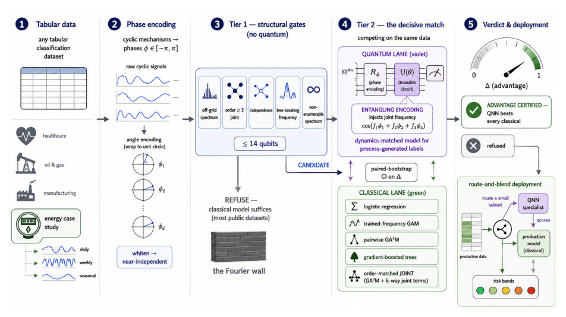
<figcaption class="paper-figure-caption"><b>Fig 1.</b> Figure 1: The SPECTRA pipeline, end to end. (1) Any tabular classification dataset (the energy meter is this paper’s case study; healthcare, oil &amp; gas and manufacturing are candidate domains). (2) Cyclic mechanisms re-expressed as phases ϕ ∈[−π, π], whitened to near-independence. (3) Tier 1: the structural gates (off-grid spectrum, order ≥3 joint, independence, tree-breaking frequency, ≤14 qubits), which run in minutes without a quantum simulator; most public datasets exit here at the Fourier wall, where the classical model suffices. (4) Tier 2: the decisive match between the quantum lane (entangling encoding injecting the joint frequency) and the tuned classical lane (trained-frequency...</figcaption>
</figure>
<figure class="paper-figure-card">
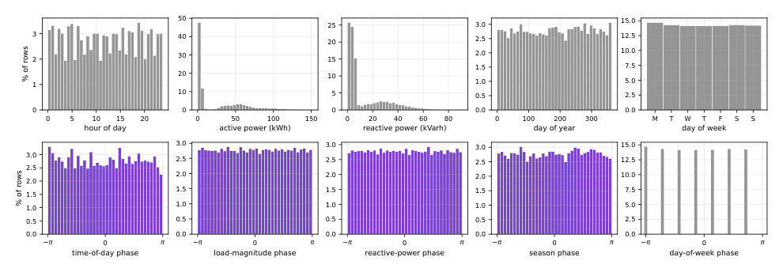
<figcaption class="paper-figure-caption"><b>Fig 2.</b> Figure 2: From genuine meter fields to encodable phases. Top row, the raw operational fields as measured (share of rows on the vertical axis): the power draws are heavy-tailed while the calendar fields are close to uniform over their cycles; nothing here is synthesized. Bottom row, the phase each field becomes on [−π, π], by rank transform of the log magnitude or by mapping the calendar cycle. The four continuous phases (violet) enter the quantum-encoded block with uniform support by construction, so no region of the encoding is starved of data. The day-of-week phase (gray) remains seven discrete levels and is kept out of the encoded block, since a low-cardinality phase hands the “joint”...</figcaption>
</figure>
<figure class="paper-figure-card">
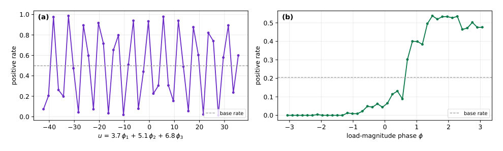
<figcaption class="paper-figure-caption"><b>Fig 3.</b> Figure 3: Positive rate along one coordinate, with the dataset base rate dashed. (a) The sparse engineered pocket along the joint coordinate u = 3.7ϕ1 + 5.1ϕ2 + 6.8ϕ3: a clean high-frequency, non-integer oscillation that trees cannot tile and additive/pairwise Fourier models cannot represent. But the very cleanness is the tell: one oscillating coordinate means an enumerable spectrum, and a supervised search finds u in seconds, so C5 assigns this substrate to the order-matched classical (Section 6.2). (b) The real peak-regime target along its dominant axis (load-magnitude phase): smooth, monotone, low-order, ideal tree territory, hence the refusal of Section 6.1.</figcaption>
</figure>
<figure class="paper-figure-card">
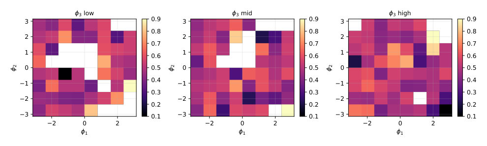
<figcaption class="paper-figure-caption"><b>Fig 4.</b> Figure 4: Order-3 non-separability, visible without a model: positive rate over the first two phases (ϕ1, ϕ2), conditioned on the third (ϕ3 low / mid / high terciles). The two-phase pattern changes across the slices. Any additive or pairwise model produces the same (ϕ1, ϕ2) response in every slice, so this dependence is structurally out of its reach (condition C2).</figcaption>
</figure>
<figure class="paper-figure-card">
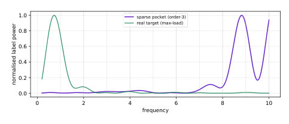
<figcaption class="paper-figure-caption"><b>Fig 5.</b> Figure 5: Label spectral power along the dominant coor- dinate; integer harmonics dotted. The sparse engineered pocket (violet) concentrates its mass between the integer frequencies (condition C1, Eq. 4), out of reach of a fixed- grid surrogate, but concentrated at one joint frequency, which is exactly what makes it enumerable, so C5 places it with the order-matched classical: a supervised scan walks straight to the peak. The real target’s mass (green) sits at low frequency, where every classical model operates com- fortably. The certified dense-spectrum substrate has no such single peak to find.</figcaption>
</figure>
</div>
<p><strong>Summary.</strong> This paper argues that current QML failures on public datasets stem from the inherent structure of the data, which rarely meets strict mathematical criteria for quantum advantage. The authors introduce SPECTRA, a two-tier certificate to test for these rare structures, demonstrating that true potential lies in analyzing signals with high-order, non-separable spectral interactions.</p>
<p><strong>Why it may be interesting.</strong> It provides a rigorous, quantifiable framework—a 'recipe'—to distinguish genuine quantum computational advantages from mere model tuning or dataset artifacts in the context of structured physical data analysis.</p>
<details>
<summary>Detailed structure</summary>
<p><strong>Main problem.</strong> Quantum Machine Learning (QML) models consistently underperform classical baselines on public tabular datasets, leading to skepticism about quantum advantage in ML.</p>
<p><strong>Main result.</strong> A genuine quantum advantage is structurally limited to highly specific data regimes characterized by high-order, off-grid spectral interactions. The authors propose a 'Fourier Wall' certificate to identify these rare candidates.</p>
<p><strong>Method.</strong> They introduce SPECTRA, a two-tier certification process: a structural screen checking five necessary conditions (e.g., non-separable order $\ge 3$) followed by a decisive comparison against a complete set of tuned classical benchmarks using paired-bootstrap confidence bounds.</p>
<p><strong>Model / system.</strong> The core model is an angle-encoded variational quantum network (QNN) implementing a partial Fourier series, tested against various classical ML models like Gradient-boosted trees and Joint Additive Models on structured data.</p>
<p><strong>Key observables.</strong> ROC-AUC scores, the confidence bound of performance gap ($\Delta$), and the exponential scaling cost of exact classical simulation vs. quantum circuit depth.</p>
<p><strong>Important parameters / regimes.</strong> Interaction order $\ge 3$, off-grid spectrum ratio ($
ho_{    ext{off}}$), system size ($n \approx 13-40$ sites), and the crossover point where classical simulation becomes intractable.</p>
<p><strong>Assumptions / limitations.</strong> The advantage is structural, requiring data to possess a hidden structure of jointly interacting periodic rhythms; failure to include an order-matched classical twin invalidates the claim.</p>
<p><strong>Figures summary.</strong> Figures illustrate the SPECTRA pipeline (Tier 1 gates), performance gaps in controlled energy load tests (showing QNN beating classical when conditions are met), and resource scaling showing exponential classical cost growth versus flat quantum budget.</p>
<p><strong>Paper structure.</strong> The paper establishes the problem of null results, introduces the structural criteria for advantage (the five necessary conditions), details the two-tier SPECTRA certificate methodology, validates it on controlled synthetic data demonstrating success, and concludes with a discussion of resource scaling and deployment recipes.</p>
</details>
<details>
<summary>Abstract</summary>
<p>Across public tabular benchmarks, quantum machine-learning (QML) models usually lose to carefully tuned classical baselines. We argue that this is a structural property of the datasets rather than merely a limitation of current models. Because an angle-encoded quantum neural network is a partial Fourier series, a genuine advantage can arise only when the target spectrum is simultaneously off-grid, of interaction order at least three, high-frequency, supported by near-independent features, and dense beyond practical enumeration. We call the failure to satisfy these conditions the Fourier wall. We operationalize the conditions as SPECTRA, a two-tier certificate: a simulator-free structural screen followed by a decisive comparison between a matched quantum model and five tuned classical twins using paired-bootstrap confidence bounds. On industrial smart-meter data, SPECTRA correctly refuses the real peak-load target, for which gradient-boosted trees reach a held-out ROC-AUC of 0.999. On the same real energy phases with labels generated by an interacting quantum process, the dynamics-matched quantum model reaches 0.994 versus 0.699 for the best generic classical baseline, and collapses to chance when its interaction couplings are ablated. An exact classical simulator ties the quantum model at small width but incurs measured exponential evaluation cost, with an estimated hardware crossover near 13-19 sites. These results provide a practical recipe for identifying, engineering, and deploying quantum-advantage candidates in tabular data.</p>
</details>
<p><sub><a href="#top">↑ back to top</a></sub></p>
</details>
<h2 id="secondary-cond-mat-archives">Secondary cond-mat archives</h2>
<p><em>Papers from cond-mat.mtrl-sci, mes-hall, other, soft, supr-con. These archives are de-prioritized — they appear at the end regardless of relevance score.</em></p>
<h3 id="relevant-in-secondary-archives-22">Relevant in secondary archives (22)</h3>

<p><a id="paper-2607.15665"></a></p>
<h3 id="long-range-spatial-correlations-in-the-periodically-driven-transverse-field-ising-model"><a href="http://arxiv.org/abs/2607.15665v1">Long range spatial correlations in the periodically driven transverse field Ising model</a></h3>
<p><strong>Authors:</strong> Lazar Paroski, Ivan Iorsh<br>
<strong>Type:</strong> theory · <strong>Category:</strong> statistical mechanics · <strong>PDF:</strong> <a href="https://arxiv.org/pdf/2607.15665v1">https://arxiv.org/pdf/2607.15665v1</a><br>
<strong>Analysis basis:</strong> full PDF text, analyzed in chunks
<strong>Topic relevance:</strong> 🔥 <code>non-equilibrium dynamics</code> <strong>5/5</strong> · 🔥 <code>non-equilibrium universality</code> <strong>4/5</strong> · <code>driven-dissipative phase transition</code> <strong>3/5</strong> · <code>methods for driven-dissipative</code> <strong>3/5</strong> · <code>Keldysh / 2PI / non-Gaussian methods</code> <strong>2/5</strong> · <code>analog quantum simulation</code> <strong>2/5</strong> · <code>correlated / nonlocal dissipation</code> <strong>1/5</strong> · <code>entanglement &amp; information structure</code> <strong>1/5</strong> · <code>exotic spin models in light-matter</code> <strong>1/5</strong> · <code>scars &amp; prethermalization</code> <strong>1/5</strong></p>
<div class="figure-strip-hint">↔ Scroll figures horizontally</div>
<div class="paper-figures-scroll">
<figure class="paper-figure-card">
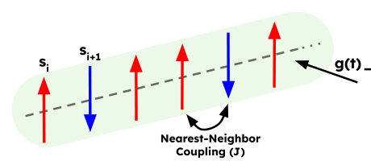
<figcaption class="paper-figure-caption"><b>Fig 1.</b> FIG. 1. Schematic of the 1D transverse-field Ising chain. Spins si (red and blue arrows) denote up and down configura- tions that interact via the nearest-neighbor coupling J. The entire chain is subject to a uniform, time-dependent trans- verse field g(t) following a periodic rectangular drive.</figcaption>
</figure>
<figure class="paper-figure-card">
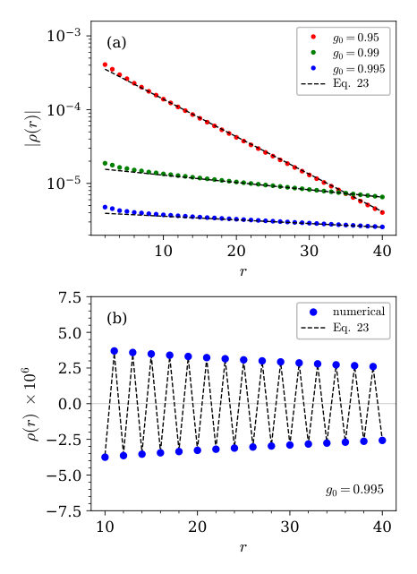
<figcaption class="paper-figure-caption"><b>Fig 2.</b> FIG. 2. Correlation function ρ(r) at fixed period T = π/2, compared to Eq. (23). (a) |ρ(r)| for g0 ∈{0.95, 0.99, 0.995}. (b) Signed ρ(r) at g0 = 0.995 over r ∈[10, 40].</figcaption>
</figure>
<figure class="paper-figure-card">
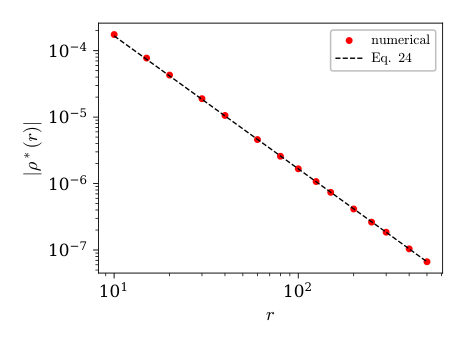
<figcaption class="paper-figure-caption"><b>Fig 3.</b> FIG. 3. Optimally-tuned envelope |ρ∗(r)| = maxδg |ρ(r, δg)| at T = π/2, compared to Eq. (24).</figcaption>
</figure>
</div>

<p><strong>Summary.</strong> This paper investigates spatial correlations in a periodically driven transverse field Ising model. By analyzing the pole structure of the correlation function, the authors show that tuning the drive period allows for constructive interference between different excitation sources (Kibble-Zurek and Floquet resonances). This interference leads to an unusually slow, algebraic decay of correlations, suggesting control over quantum coherence in driven many-body systems.</p>
<p><strong>Why it may be interesting.</strong> This work directly addresses non-equilibrium dynamics in periodically driven quantum systems, which is highly relevant to understanding Floquet engineering and how external driving can manipulate correlation decay rates beyond equilibrium predictions.</p>
<details>
<summary>Detailed structure</summary>
<p><strong>Main problem.</strong> The study focuses on determining the long-time spatial correlations of excitations within a periodically driven transverse field Ising model.</p>
<p><strong>Main result.</strong> The correlation length can be made arbitrarily large by tuning the drive period, due to constructive interference between contributions from the Kibble-Zurek mechanism and Floquet resonances, leading to an optimal algebraic decay rate of r^-2.</p>
<p><strong>Method.</strong> The analysis uses Jordan-Wigner transformations to map spins to fermions, followed by analyzing the pole structure of the correlation function in momentum space near the unit circle.</p>
<p><strong>Model / system.</strong> The system is a one-dimensional Transverse Field Ising Model (TFIM) subjected to a periodic drive $g(t)$. The Hamiltonian involves nearest-neighbor interactions and a time-dependent transverse field term.</p>
<p><strong>Key observables.</strong> Longest correlation length ($\xi$) and the spatial correlation function $
ho(r, t)$ for excitations.</p>
<p><strong>Important parameters / regimes.</strong> The driving period ($T$), which must satisfy specific conditions related to Floquet resonances; the coupling constants $g_0$ and $g_1$.</p>
<p><strong>Assumptions / limitations.</strong> The analysis relies on identifying poles in the correlation function integral, specifically requiring the interference between two distinct pole contributions.</p>
<p><strong>Figures summary.</strong> Figure 2 illustrates numerical calculations of $|
ho(r)|$ for varying drive amplitudes. Figure 3 compares the analytically derived optimal envelope $|
ho^*(r)|$ with its calculated form at specific resonance conditions.</p>
<p><strong>Paper structure.</strong> The paper analyzes the system's dynamics by transforming it into a fermionic problem, deriving the correlation function from four-fermion expectation values, and then performing a detailed pole analysis to identify the mechanism responsible for long-range correlations.</p>
</details>
<details>
<summary>Abstract</summary>
<p>We consider a periodically driven transverse field Ising model and study the long-time behavior of the correlations between the excitations in the spin chain. We show that the longest correlation length is defined by the interference between the topological defects induced by the analog of the Kibble-Zurek mechanism and those induced by the Floquet resonance. We show that although the correlations always have a finite correlation length since the system is integrable, the correlation length can be made arbitrarily large by tuning the drive period.</p>
</details>
<p><sub><a href="#top">↑ back to top</a></sub></p>

<p><a id="paper-2607.16011"></a></p>
<h3 id="negative-quantum-friction-in-nanoscale-water-flows-the-wigner-picture"><a href="http://arxiv.org/abs/2607.16011v1">Negative quantum friction in nanoscale water flows: the Wigner picture</a></h3>
<p><strong>Authors:</strong> Adriano Tiribocchi, Marco Lauricella, Efthimios Kaxiras, Sauro Succi<br>
<strong>Type:</strong> theory · <strong>Category:</strong> statistical mechanics · <strong>PDF:</strong> <a href="https://arxiv.org/pdf/2607.16011v1">https://arxiv.org/pdf/2607.16011v1</a><br>
<strong>Analysis basis:</strong> full PDF text, analyzed in chunks
<strong>Topic relevance:</strong> 🔥 <code>Keldysh / 2PI / non-Gaussian methods</code> <strong>4/5</strong> · <code>Frenkel-Kontorova</code> <strong>3/5</strong> · <code>methods for driven-dissipative</code> <strong>3/5</strong> · <code>non-equilibrium dynamics</code> <strong>3/5</strong> · <code>driven-dissipative phase transition</code> <strong>2/5</strong> · <code>non-equilibrium universality</code> <strong>2/5</strong> · <code>Kondo &amp; dissipative impurity</code> <strong>1/5</strong> · <code>correlated / nonlocal dissipation</code> <strong>1/5</strong></p>
<div class="figure-strip-hint">↔ Scroll figures horizontally</div>
<div class="paper-figures-scroll">
<figure class="paper-figure-card">
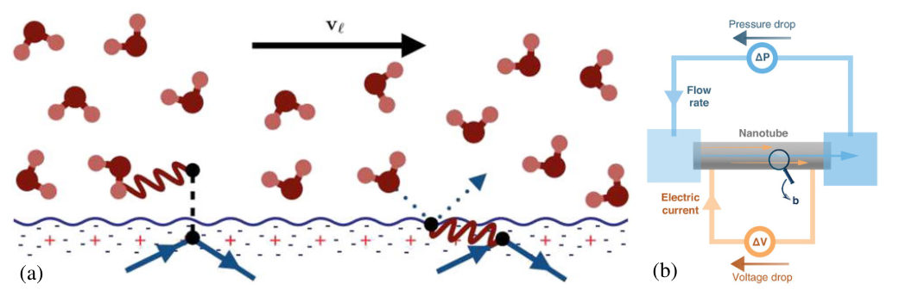
<figcaption class="paper-figure-caption"><b>Fig 1.</b> Figure 1. (a) Schematic representation of the mechanisms driving the electronic current: hydrons (charged fluctuations of water molecules, red particles) transfer momentum to the electrons in the solid (black particles) through screened Coulomb interactions (black dotted line) and phonons (wavy lines), resulting from hits against the wall. (b) Schematic functioning of a hydronic generator. As the liquid flows through a nanotube connected to an external circuit, an electric current, caused by the hydroelectronic drag, results from the flow of the liquid. Figures adapted from Refs.[6, 7].</figcaption>
</figure>
<figure class="paper-figure-card">
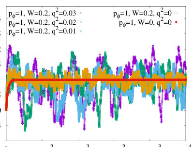
<figcaption class="paper-figure-caption"><b>Fig 2.</b> Figure 2. Time evolution of the current J of a single particle (extracted from N = 100 different realizations) for pϕ = 1, W = 0, 0.2 and q2 = 0, 0.01, 0.02, 0.03. The solid curve represents the deterministic case, without water fluctuations, whereby the particle is driven towards the steady state condi- tion p = pϕ on a time scale 1/γ (classical friction). Increasing q2 leads to larger amplitude fluctuations and a slight decrease of the average current.</figcaption>
</figure>
<figure class="paper-figure-card">
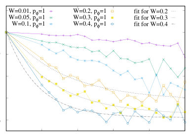
<figcaption class="paper-figure-caption"><b>Fig 3.</b> Figure 3. Current vs q2, averaged over time (T = 20, 000) and realizations (N = 100) for different values of W and pϕ = 1. A net decrease of the electronic current at increasing q2 is visible, amounting to about 30 percent at q2 = 0.05 (semi-quantum) regime. The curve obeys a fit of the form J(q2) = J(0) −∆J(1 −exp(−q2/Q2)), with ∆J/J(0) ∼0.32 and Q2 ∼0.015 for W=0.2 (dashed curve), ∆J/J(0) ∼0.37 and Q2 ∼0.013 for W = 0.3 (dotted curve), ∆J/J(0) ∼0.4 and Q2 ∼0.009 for W = 0.4 (dot-dashed curve).</figcaption>
</figure>
<figure class="paper-figure-card">
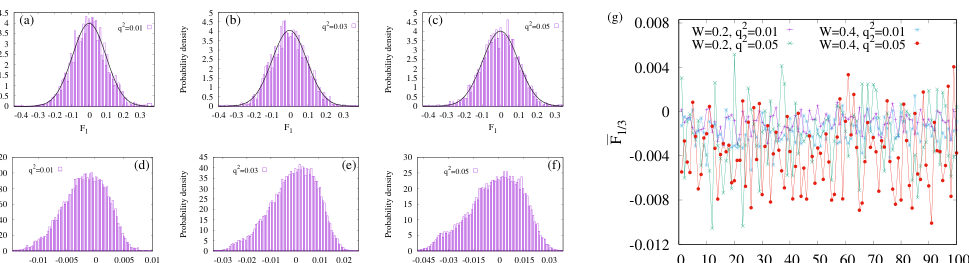
<figcaption class="paper-figure-caption"><b>Fig 4.</b> Figure 4. The probability density of F1 (a,b,c) and F1/3 (d,e,f) for pϕ = 0.1, W = 0.2 and q2 = 0.01, q2 = 0.03, q2 = 0.05. Regardless of the values of q2, F1 closely follows a Gaussian distribution where µ ∼0 and σ ∼0.1. By contrast, F1/3 shows a negative skewness, with an increasingly heavy left tail, as q2 augments, with the skewness approximately ranging from -0.3 for q2 = 0.01 to −0.4 for q2 = 0.05. We associate the progressive increase of negative skewness with the reduction of ⟨¯J⟩. In panel (g) we show the typical trend of ¯F1/3 over N = 100 realizations. Increasing q2 leads to a shift towards negative values with a concurrent increase of the fluctuation amplitude.</figcaption>
</figure>
<figure class="paper-figure-card">
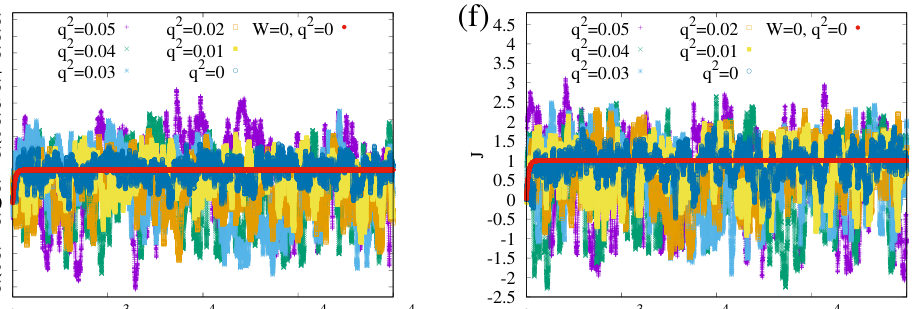
<figcaption class="paper-figure-caption"><b>Fig 5.</b> Figure 5. Time evolution of the current J of a single particle for different values of q2 and W = 0.1 (a,b), W = 0.3 (c,d), W = 0.4 (e,f). These ones are compared to the classical unperturbed case, where q2 = 0 and W = 0. The left column shows systems whose absolute value of the time averages is minimum among all realizations, while in the right column the time average is maximum. On a general basis, increasing q2 and W enhances the amplitude of the fluctuations, with a progressive shift towards values considerably lower than 1.</figcaption>
</figure>
</div>

<p><strong>Summary.</strong> This paper theoretically investigates how quantum effects modify friction in confined water flows by modeling electron interactions using the Wigner equation. Numerical simulations reveal a signature of negative quantum friction, which substantially reduces the drag force experienced by the liquid. This work establishes a theoretical bridge between continuum kinetic theories and particle dynamics for nanoscale energy transport.</p>
<p><strong>Why it may be interesting.</strong> This work provides a concrete example of non-equilibrium statistical mechanics where quantum corrections significantly alter macroscopic transport properties (friction), offering insights into energy conversion at the nanoscale boundary between classical and quantum regimes.</p>
<details>
<summary>Detailed structure</summary>
<p><strong>Main problem.</strong> The study investigates the phenomenon of 'quantum' friction occurring during nanoscale water flows, specifically examining how quantum fluctuations modify energy dissipation.</p>
<p><strong>Main result.</strong> Negative quantum friction is predicted and observed, leading to a significant reduction (up to 40%) in the frictional drag experienced by the flowing water compared to classical predictions.</p>
<p><strong>Method.</strong> The research employs numerical simulations solving a fractional Langevin equation derived from modeling electron dynamics using the Wigner picture.</p>
<p><strong>Model / system.</strong> The system models electrons moving in a solid wall confining nanoscale water flows, where interactions are mediated by charge fluctuations ('hydrons') in the liquid. The theory bridges continuum kinetic descriptions with particle-based simulations.</p>
<p><strong>Key observables.</strong> Negative quantum friction (net momentum transfer from electrons to water), average current $\langle ar{J} 
angle$, and force profiles ($F_{1/3}(x)$).</p>
<p><strong>Important parameters / regimes.</strong> Quantumness parameter ($q$), fluctuation amplitude ($W$), and the degree of coupling between classical and quantum fluctuations.</p>
<p><strong>Assumptions / limitations.</strong> The analysis utilizes the Wigner formulation as an alternative to Keldysh formalism, and approximations include quasi-static updates for the potential $V(x)$.</p>
<p><strong>Figures summary.</strong> Figures illustrate the time evolution of current $J$ showing decay with increasing quantum parameters, quantifying the reduction in average current $\langle ar{J} 
angle$, and displaying probability density functions of the fractional force components.</p>
<p><strong>Paper structure.</strong> The paper builds a theoretical framework using the Wigner equation to model electron-water interaction. It then uses numerical simulations on a fractional Langevin equation to calculate observables, demonstrating how quantum effects manifest as negative friction coefficients that reduce drag.</p>
</details>
<details>
<summary>Abstract</summary>
<p>We explore the phenomenon of "quantum" friction based on a single-particle model patterned after the Wigner equation describing electrons flow in a solid wall confining nanoscale water flows. The numerical simulations show a clear signature of negative quantum friction, namely a net momentum transfer from the electrons in the solid wall to the flowing water molecules. Such net momentum transfer results into a sizeable reduction of the water friction, up to forty percent, depending on the strength of the coupling between classical and quantum fluctuations. Our results offer the prospect of a theoretical framework bridging classical and quantum description by using continuum kinetic theories and particle-based simulations.</p>
</details>
<p><sub><a href="#top">↑ back to top</a></sub></p>

<p><a id="paper-2607.15692"></a></p>
<h3 id="constructing-far-from-equilibrium-patterns-in-a-cross-diffusion-vegetation-autotoxicity-model"><a href="http://arxiv.org/abs/2607.15692v1">Constructing far-from-equilibrium patterns in a cross-diffusion vegetation-autotoxicity model</a></h3>
<p><strong>Authors:</strong> Annalisa Iuorio, Cinzia Soresina, Frits Veerman<br>
<strong>Type:</strong> theory · <strong>Category:</strong> statistical mechanics · <strong>PDF:</strong> <a href="https://arxiv.org/pdf/2607.15692v1">https://arxiv.org/pdf/2607.15692v1</a><br>
<strong>Analysis basis:</strong> full PDF text, analyzed in chunks
<strong>Topic relevance:</strong> 🔥 <code>non-equilibrium dynamics</code> <strong>4/5</strong> · <code>driven-dissipative phase transition</code> <strong>3/5</strong> · <code>methods for driven-dissipative</code> <strong>3/5</strong> · <code>non-equilibrium universality</code> <strong>3/5</strong> · <code>Frenkel-Kontorova</code> <strong>1/5</strong> · <code>Keldysh / 2PI / non-Gaussian methods</code> <strong>1/5</strong> · <code>correlated / nonlocal dissipation</code> <strong>1/5</strong></p>
<div class="figure-strip-hint">↔ Scroll figures horizontally</div>
<div class="paper-figures-scroll">
<figure class="paper-figure-card">
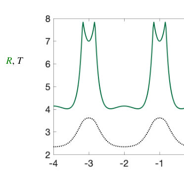
<figcaption class="paper-figure-caption"><b>Fig 1.</b> Figure 1: Double-peaked stationary pattern in 1D (green solid line: R-profile (roots biomass), black dotted line: T-profile (toxicity concentration) obtained by continuation in pde2path and numerical simulations of the cross-diffusion system for plant-biomass and toxicity studied in [30].</figcaption>
</figure>
<figure class="paper-figure-card">
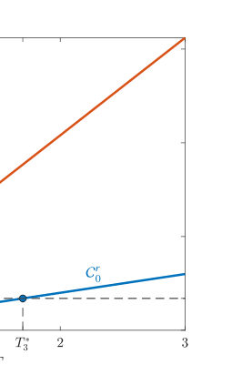
<figcaption class="paper-figure-caption"><b>Fig 2.</b> Figure 2: The projection of the critical manifold C0 (3.9) onto (T, P)-space for 0 &lt; ρ &lt; 1/2 (orange) and for 1/2 &lt; ρ &lt; 1 (blue). In the latter case, there is a bistability regime for the layer problem (3.12). The vertical dotted lines indicate the location of T = 1/(2ρ) and T = 1, respectively, dividing the critical manifold in the three pieces Cl 0 (left), Cm 0 (middle), and Cr 0 (right). The horizontal dashed line at a fixed value of P = ¯P shows the existence of three intersection points (dots) for T = T ∗ i , i = 1, 2, 3, as defined in Eq. (3.13).</figcaption>
</figure>
<figure class="paper-figure-card">
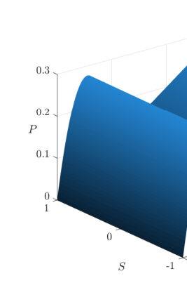
<figcaption class="paper-figure-caption"><b>Fig 3.</b> Figure 3: Critical manifold C0 (3.9) in (T, S, P)-space for 1/2 &lt; ρ &lt; 1.</figcaption>
</figure>
<figure class="paper-figure-card">
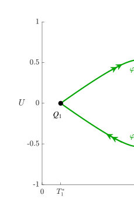
<figcaption class="paper-figure-caption"><b>Fig 4.</b> Figure 4: Double heteroclinic connection φ± h for ρ = 0.9 and P∗(ρ) ≈0.15 in (T, U)-space between Q1 and Q3.</figcaption>
</figure>
<figure class="paper-figure-card">
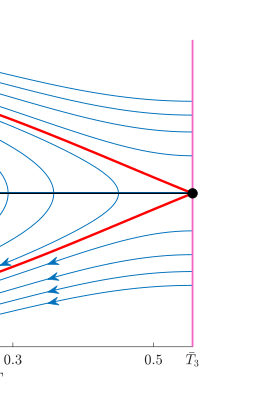
<figcaption class="paper-figure-caption"><b>Fig 5.</b> Figure 5: Sketch of the dynamics for the reduced problem (3.23) on Cl 0 in (T, S )-space with ρ = 0.9. The black, dashed line corresponds to T = T ∗ l (ρ); the magenta vertical line is located at T = ¯T3. The red curves correspond to the level set {Hl(T, S ) = Hl( ¯T3, 0)}. The orange (resp. purple) curve represents the touch-down (resp. take-off) set T l d (resp. T l o), see eq. (3.26). The black dots mark the equilibria at ( ¯T1, 0) and ( ¯T3, 0), whereas the arrows indicate the flow direction.</figcaption>
</figure>
</div>

<p><strong>Summary.</strong> This theoretical paper uses Geometric Singular Perturbation Theory to study pattern formation in a cross-diffusion model for plant growth under toxicity. By analyzing the geometry of the system's critical manifold, the authors determine necessary conditions for the existence of stable front-type patterns based on the specific functional forms governing the reaction kinetics.</p>
<p><strong>Why it may be interesting.</strong> While focused on ecology/biology, the mathematical machinery—GSPT applied to reaction-diffusion systems exhibiting far-from-equilibrium dynamics and complex geometric structures like heteroclinic connections—is highly relevant to non-equilibrium statistical mechanics models in physics.</p>
<details>
<summary>Detailed structure</summary>
<p><strong>Main problem.</strong> The paper aims to construct and prove the existence of stationary, periodic, front-type far-from-equilibrium patterns in a cross-diffusion model describing plant growth influenced by autotoxicity.</p>
<p><strong>Main result.</strong> Front-type patterns can exist for certain functional forms (like power functions) but are shown not to exist for others (like Holling-type II functions) within the general model class analyzed.</p>
<p><strong>Method.</strong> The primary tool is Geometric Singular Perturbation Theory (GSPT), which allows extending 1D pattern analysis techniques to include cross-diffusion terms by analyzing the fast-reaction limit and the geometry of the critical manifold.</p>
<p><strong>Model / system.</strong> The system is a cross-diffusion vegetation-autotoxicity model governed by coupled PDEs involving biomass (R) and toxicity (T). The analysis focuses on reducing this PDE system to an autonomous ODE layer problem using the small parameter $\epsilon$ approximation.</p>
<p><strong>Key observables.</strong> Pattern formation profiles (fronts, pulses), the geometry of the critical manifold ($C_0$), and the existence/stability of heteroclinic connections between different segments of $C_0$.</p>
<p><strong>Important parameters / regimes.</strong> Cross-diffusion coefficient ($\alpha$), diffusion coefficients ($d_R, d_T$), growth rates, and parameters defining the reaction terms (e.g., $
ho$ in the layer problem).</p>
<p><strong>Assumptions / limitations.</strong> The analysis relies on the fast-reaction limit approximation ($\epsilon \ll 1$) and makes structural assumptions about the monotonicity of the transition rate functions $f(T)$ and $g(T)$.</p>
<p><strong>Figures summary.</strong> Figures illustrate the structure of the critical manifold $C_0$ in various parameter spaces (e.g., $(T, P)$-space) and show numerical profiles confirming where pattern existence conditions are met or violated.</p>
<p><strong>Paper structure.</strong> The paper progresses by first introducing the physical model and its general mathematical framework using GSPT. It then analyzes specific simplified cases to derive the layer problem, focusing on characterizing the critical manifold structure through algebraic analysis before concluding with functional form comparisons (power vs. Holling-type II) to determine pattern existence.</p>
</details>
<details>
<summary>Abstract</summary>
<p>Using geometric singular perturbation theory, we construct stationary, periodic, front-type far-from-equilibrium patterns in a cross-diffusion model for plant growth under the influence of toxicity. We show how existing techniques for the analysis of far-from-equilibrium patterns in one spatial dimension can be extended to include cross-diffusion terms and prove the existence of a one-parameter family of these patterns. For a general cross-diffusion model class, we show when front-type patterns may appear depending on the shape of the critical manifold, which is determined by the specific properties of the reaction terms.</p>
</details>
<p><sub><a href="#top">↑ back to top</a></sub></p>

<p><a id="paper-2607.15967"></a></p>
<h3 id="nonuniform-pressure-helps-structural-superlubricity"><a href="http://arxiv.org/abs/2607.15967v1">Nonuniform pressure helps structural superlubricity</a></h3>
<p><strong>Authors:</strong> Melisa M. Gianetti, Viet Hung Ho, Bjørn Haugen, Graham Cross, Astrid S. de Wijn<br>
<strong>Type:</strong> theory · <strong>Category:</strong> statistical mechanics · <strong>PDF:</strong> <a href="https://arxiv.org/pdf/2607.15967v1">https://arxiv.org/pdf/2607.15967v1</a><br>
<strong>Analysis basis:</strong> full PDF text, analyzed in chunks
<strong>Topic relevance:</strong> 🔥 <code>Frenkel-Kontorova</code> <strong>4/5</strong> · <code>non-equilibrium universality</code> <strong>3/5</strong> · <code>driven-dissipative phase transition</code> <strong>2/5</strong> · <code>methods for driven-dissipative</code> <strong>1/5</strong> · <code>non-equilibrium dynamics</code> <strong>1/5</strong></p>
<div class="figure-strip-hint">↔ Scroll figures horizontally</div>
<div class="paper-figures-scroll">
<figure class="paper-figure-card">
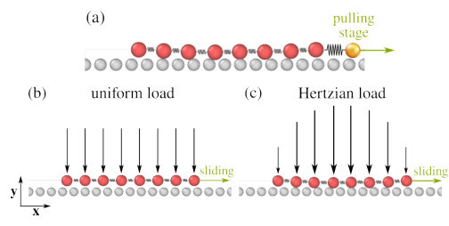
<figcaption class="paper-figure-caption"><b>Fig 1.</b> FIG. 1. (a) Sketch of the model for a slider of n = 8 particles. (b) Uniform and (c) Hertzian loads applied to the system.</figcaption>
</figure>
<figure class="paper-figure-card">
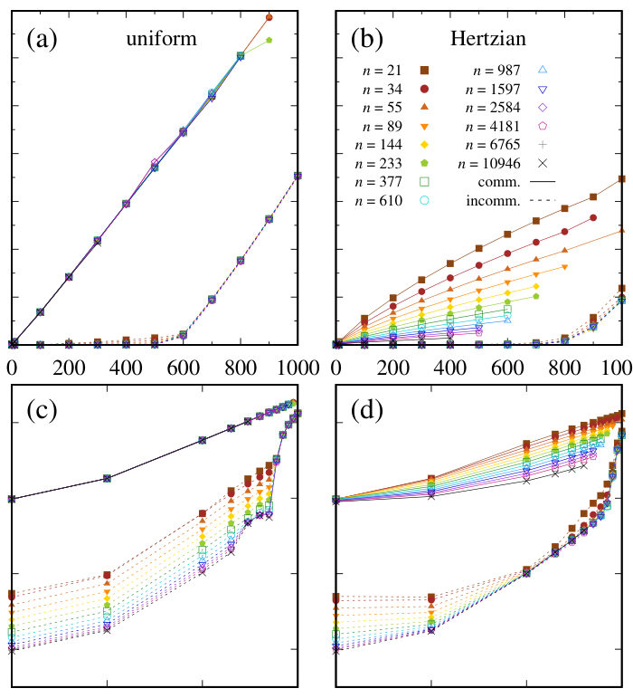
<figcaption class="paper-figure-caption"><b>Fig 2.</b> FIG. 2. Average friction per particle as a function of the load per particle for commensurate and incommensurate systems with (a) and (c) uniform and (b) and (d) Hertzian pressure distributions. (a) and (b) linear scale, (c) and (d) log-log scale. Solid lines represent the commensurate contacts, and dashed lines represent incommensurate contacts. Different colors represent different slider sizes (n). The incommensurate system has lower friction than the commensurate for both uniform and nonuniform pressure distributions.</figcaption>
</figure>
<figure class="paper-figure-card">
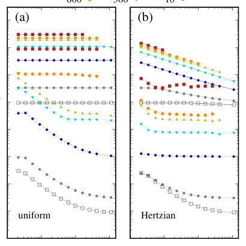
<figcaption class="paper-figure-caption"><b>Fig 3.</b> FIG. 3. Average friction per particle as a function of the number of particles, log-log plot for both commensurate and incommensurate systems with (a) uniform and (b) Hertzian pressure distribution. Solid and dashed lines correspond to commensurate and incommensurate contacts respectively. The observation of figure 2 is confirmed. Both systems show lower friction when the distribution of the pressure is non uni- form.</figcaption>
</figure>
<figure class="paper-figure-card">
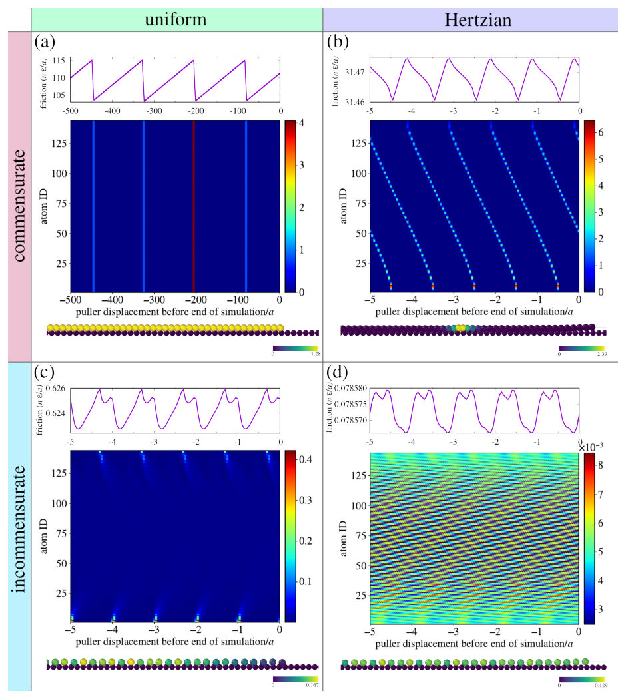
<figcaption class="paper-figure-caption"><b>Fig 4.</b> FIG. 4. Kinetic energy maps at load/n = 300ϵ/a (below the Aubry transition), n = 144 for a small displacement during the steady state, (a) commensurate configuration - uniform pressure, (b) commensurate configuration - Hertzian pressure, (c) incommensurate configuration - uniform pressure, (d) incommensurate configuration - Hertzian pressure. On each panel on top, the friction per particle as a function of the displacement reported on the kinetic energy map, on the center the kinetic energy map, on the bottom a snapshot of the head of the slider with each particle colored by its velocity magnitude. Atom ID = 1 is the first atom of the slider, what we call the “head atom”.</figcaption>
</figure>
<figure class="paper-figure-card">
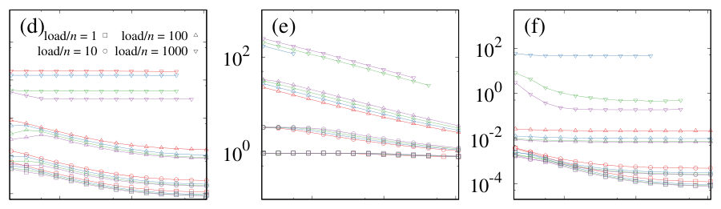
<figcaption class="paper-figure-caption"><b>Fig 5.</b> FIG. 5. Elasticity effect on commensurate and incommensurate contacts under uniform and nonuniform load. Average friction per particle as a function of load per particle for (a) incommensurate, uniform load, (b) commensurate, nonuniform load and (c) incommensurate, nonuniform load for different bond elasticities. Average friction per particle as a function of the number of particles, log-log plot for (d) incommensurate, uniform load, (e) commensurate, nonuniform load and (f) incommensurate, nonuniform load for different bond elasticities.</figcaption>
</figure>
</div>

<p><strong>Summary.</strong> This paper analyzes structural superlubricity by examining the role of pressure distribution during sliding contact. It demonstrates that nonuniform pressure, which is more realistic than idealized uniform loading, actually promotes lower friction. The findings suggest that gently curved interfaces with specific elastic properties can achieve highly efficient energy dissipation mechanisms.</p>
<p><strong>Why it may be interesting.</strong> While focused on classical friction, the analysis of depinning transitions (Aubry transition) and size-dependent critical behavior touches upon concepts relevant to driven many-body systems and non-equilibrium statistical mechanics.</p>
<details>
<summary>Detailed structure</summary>
<p><strong>Main problem.</strong> The study investigates how nonuniform pressure distributions affect structural superlubricity, a state of near-zero friction between crystalline surfaces.</p>
<p><strong>Main result.</strong> Contrary to expectations, the presence of nonuniform pressure profiles actually enhances structural superlubricity compared to uniform loading conditions.</p>
<p><strong>Method.</strong> The research employs both analytical calculations for rigid contacts and molecular-dynamics simulations incorporating elastic effects.</p>
<p><strong>Model / system.</strong> The system models sliding contact between two crystalline surfaces (commensurate or incommensurate) under applied load, using an elastic chain slider interacting with a substrate.</p>
<p><strong>Key observables.</strong> Average friction per particle, scaling exponent of friction with contact size ($n$), and the transition behavior near the Aubry point.</p>
<p><strong>Important parameters / regimes.</strong> Pressure profile (uniform vs. Hertzian/nonuniform), incommensurability, slider elastic constant ($k_b$), and applied load.</p>
<p><strong>Assumptions / limitations.</strong> Early calculations assume rigid contacts; later simulations simplify to a 2D chain on a 1D surface for computational tractability.</p>
<p><strong>Figures summary.</strong> Figures compare friction vs. load/size dependence under uniform versus nonuniform loads, demonstrating lower friction and altered scaling exponents (e.g., $\propto n^{-0.37}$) in the latter case.</p>
<p><strong>Paper structure.</strong> The paper progresses from analytical models of rigid contacts showing improved scaling with nonuniform pressure, to molecular dynamics simulations incorporating elasticity, culminating in a detailed comparison across various loading regimes and interface types.</p>
</details>
<details>
<summary>Abstract</summary>
<p>Structural superlubricity, nearly vanishing friction between two structurally incommensurate crystalline surfaces, is a promising avenue for reducing friction in applications, but requires very specific and well-controlled conditions. One of those conditions is perfectly uniform atomically flat surfaces. Real-world surfaces are generally rough, leading to nonuniform pressure distributions. We investigate the effects of nonuniform pressure distributions on structural superlubricity, using analytical calculations for rigid contacts as a basis, and molecular-dynamics simulations for a simple model to include the crucial effects of elasticity. We show that a key ingredient is the vanishing pressure at the edge of the contact, and that this leads to improved scaling depinning and scaling behaviour, leading to lower friction. We thus show that nonuniform pressure distributions actually help structural superlubricity, rather than hinder it.</p>
</details>
<p><sub><a href="#top">↑ back to top</a></sub></p>

<p><a id="paper-2607.15925"></a></p>
<h3 id="sub-microsecond-conformational-dynamics-in-an-optical-nanocavity"><a href="http://arxiv.org/abs/2607.15925v1">Sub-microsecond conformational dynamics in an optical nanocavity</a></h3>
<p><strong>Authors:</strong> Heehun Sung, Sam C Scholten, Pavlina Sasheva, Igor Marinkovic, Warwick P Bowen<br>
<strong>Type:</strong> experiment · <strong>Category:</strong> other · <strong>PDF:</strong> <a href="https://arxiv.org/pdf/2607.15925v1">https://arxiv.org/pdf/2607.15925v1</a><br>
<strong>Analysis basis:</strong> full PDF text, analyzed in chunks
<strong>Topic relevance:</strong> <code>quantum measurements</code> <strong>3/5</strong> · <code>quantum optics experiment</code> <strong>3/5</strong> · <code>Tavis-Cummings &amp; cavity-many-emitter</code> <strong>2/5</strong> · <code>analog quantum simulation</code> <strong>2/5</strong> · <code>correlated cavity matter</code> <strong>2/5</strong> · <code>driven-dissipative phase transition</code> <strong>2/5</strong> · <code>Kondo &amp; dissipative impurity</code> <strong>1/5</strong> · <code>QC/QI experiment</code> <strong>1/5</strong> · <code>measurement-induced transitions</code> <strong>1/5</strong> · <code>methods for driven-dissipative</code> <strong>1/5</strong> · <code>non-equilibrium dynamics</code> <strong>1/5</strong> · <code>non-equilibrium universality</code> <strong>1/5</strong></p>
<div class="figure-strip-hint">↔ Scroll figures horizontally</div>
<div class="paper-figures-scroll">
<figure class="paper-figure-card">
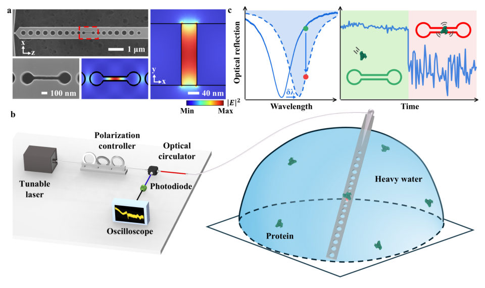
<figcaption class="paper-figure-caption"><b>Fig 1.</b> FIG. 1. Photonic crystal cavity for single molecule sensing. a, Scanning electron microscope image (greyscale) and finite element method simulation (color) of the silicon nanobeam cavities. The design combines strong and uniform field confinement within the slot region. b, Experimental configuration for single protein measurements. A tapered fibre is bonded to individual cavities, before cleaving from the chip for measurement in solution. A tunable laser (1550 nm) supplies light to the cavity, and the reflection is monitored via an optical circulator, photodiode and digital oscilloscope. c, The cavity resonance shifts when a protein enters the slot (left). By tuning the laser to one side of...</figcaption>
</figure>
<figure class="paper-figure-card">
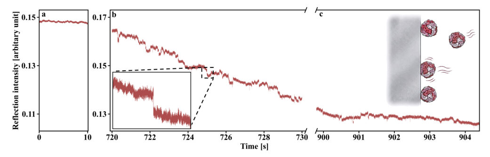
<figcaption class="paper-figure-caption"><b>Fig 2.</b> FIG. 2. Ferritin monolayer formation via adsorption onto the cavity surface. a, Signal measured prior to the addition of proteins to the solution (150 mM NaCl). b, After the addition of proteins (1 nM apo-ferritin), a gradual shift in cavity resonance is observed as a monolayer of the protein is formed across the nanobeam surface. The inset highlights a single ferritin adsorption event within the slot region. c, Stabilized signal observed after several minutes. Once the monolayer has been formed and stabilised, the laser is retuned to the side of the cavity resonance for subsequent measurements.</figcaption>
</figure>
<figure class="paper-figure-card">
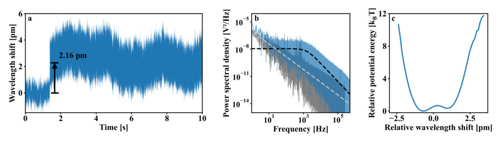
<figcaption class="paper-figure-caption"><b>Fig 3.</b> FIG. 3. Optical tracking of fast ferritin motions. a, Recording of a single holoferritin attaching to a holoferritin monolayer. Compared with direct binding to the cavity, these events are rare, transient, and feature an increase in signal fluctuations. b, The corresponding power spectral density of post-binding fluctuations (blue), compared with the bare device signal (grey). The protein signal is fit to a Lorentzian model (black dashed), and the baseline noise to a linear curve (grey dashed). c, The wavelength shift histogram is plot as a relative potential landscape, displaying a bimodal distribution. A 10 Hz high-pass filter is applied to remove measurement drift.</figcaption>
</figure>
<figure class="paper-figure-card">
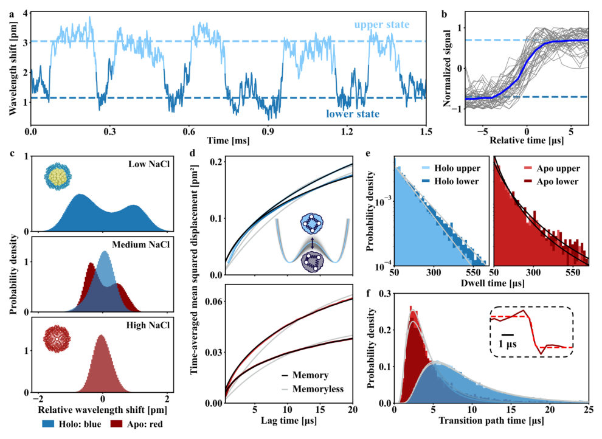
<figcaption class="paper-figure-caption"><b>Fig 4.</b> FIG. 4. Analysis of stepping dynamics in ferritin. a, Short time scale view of single-holoferritin signal from Fig. 3a, displaying stepping between an ‘upper’ and ‘lower’ state. b, Forty different upward transition of holoferritin in a, with the blue solid curve showing their average. c, Histograms of the wavelength shift for holoferritin at low NaCl (4 mM, top), holoferritin and apoferritin at medium NaCl (10 mM, middle), and apoferritin at high NaCl (150 mM, bottom). A 10 Hz high-pass filter is applied before data analysis to remove measurement drift. In this figure, blue-toned data represent holoferritin, while red-toned data represent apoferritin. d, Time-averaged mean squared...</figcaption>
</figure>
</div>

<p><strong>Summary.</strong> The researchers developed and employed a novel silicon-photonic nanocavity sensor capable of monitoring single protein dynamics at sub-microsecond resolution. By measuring minute shifts in the optical resonance frequency upon conformational change, they resolved complex kinetic pathways in ferritin that were previously obscured by noise or ensemble averaging. This work establishes a powerful new tool for understanding fundamental biophysical processes.</p>
<p><strong>Why it may be interesting.</strong> This work directly applies advanced optical sensing techniques to study molecular dynamics, which is a core area of AMO physics. The use of cavity resonance shifts as a highly sensitive probe for local changes in polarizability mimics quantum coupling measurements, making it relevant to open quantum systems characterization.</p>
<details>
<summary>Detailed structure</summary>
<p><strong>Main problem.</strong> Observing protein conformational dynamics occurring on microsecond timescales is challenging due to limitations in measurement speed, Brownian motion noise, and the need for label-free techniques.</p>
<p><strong>Main result.</strong> The authors successfully resolved tens of thousands of transitions in ferritin over sub-microsecond timescales using a novel photonic sensor, revealing hidden kinetic details like switching kinetics and memory effects.</p>
<p><strong>Method.</strong> They utilized a fibre-integrated silicon-photonic nanocavity to measure the resonance frequency shift caused by protein binding, achieving high temporal resolution while suppressing Brownian motion noise.</p>
<p><strong>Model / system.</strong> The system is a slot photonic crystal cavity fabricated on silicon, used as a single-molecule sensor. The dynamics are analyzed using Hidden Markov Models (HMM) and potential energy landscape derivations from probability distributions.</p>
<p><strong>Key observables.</strong> Cavity resonance frequency shift ($\delta\omega$), Power Spectral Density (PSD), double-well potential shape, transition stepping events, and Mean Squared Displacements (MSDs).</p>
<p><strong>Important parameters / regimes.</strong> Sub-microsecond resolution, Brownian motion suppression factor of sixty, ionic strength (NaCl concentration) for tuning dynamics.</p>
<p><strong>Assumptions / limitations.</strong> The analysis assumes that the observed fluctuations can be mapped to an effective potential energy landscape via the Boltzmann relation; transition path time calculations assume low energy barriers.</p>
<p><strong>Figures summary.</strong> Figures illustrate the photonic crystal structure and setup, show ferritin monolayer formation and signal stabilization, track fast motions revealing a bimodal potential, and demonstrate stepping dynamics tunable by ionic strength.</p>
<p><strong>Paper structure.</strong> The paper progresses from establishing the physical sensor platform (photonic cavity) to demonstrating high-speed measurements on single molecules (ferritin), followed by detailed kinetic analysis using HMMs and PSD fitting to map out the underlying energy landscape and its tunability.</p>
</details>
<details>
<summary>Abstract</summary>
<p>Microsecond conformational changes underlie many protein functions, but ensemble averaging has been needed to observe them without labels. Single-shot measurements on individual proteins have had insufficient speed, while protein Brownian-motion has obscured signals. Here, we report a fibre-integrated silicon-photonic sensor that overcomes these barriers, resolving protein dynamics at sub-microsecond speeds in continuous single-shot measurements that can extend over minutes. This is achieved by combining far-sub-wavelength optical field confinement with high optical field uniformity that suppresses protein Brownian-motion by a factor of sixty. In single-shot measurements on ferritin molecules, we observe tens of thousands of transitions consistent with conformational fluctuations of the ferritin shell, resolving them over timescales as short as 400 ns. The ability to continuously monitor transitions over long times reveals switching kinetics, memory effects and molecular heterogeneity hidden in ensemble averages. This opens a new path to improved mechanistic understanding of protein function.</p>
</details>
<p><sub><a href="#top">↑ back to top</a></sub></p>

<p><a id="paper-2607.16023"></a></p>
<h3 id="magnons-reveal-topology-and-dynamics-of-a-skyrmion-crystal"><a href="http://arxiv.org/abs/2607.16023v1">Magnons reveal topology and dynamics of a skyrmion crystal</a></h3>
<p><strong>Authors:</strong> Raphael Ayache, Nilotpal Chakraborty, Manabendra Kuiri, Quentin Benichou, Antonio Lacerda-Santos, Lilian Seyve, Himadri Chakraborti, Leo Pugliese, Kenji Watanabe, Takashi Taniguchi, Cosimo Gorini, Roderich Moessner, Benoit Doucot, Preden Roulleau<br>
<strong>Type:</strong> experiment · <strong>Category:</strong> strongly correlated electrons · <strong>PDF:</strong> <a href="https://arxiv.org/pdf/2607.16023v1">https://arxiv.org/pdf/2607.16023v1</a><br>
<strong>Analysis basis:</strong> full PDF text, analyzed in chunks
<strong>Topic relevance:</strong> <code>analog quantum simulation</code> <strong>3/5</strong> · <code>exotic spin models in light-matter</code> <strong>3/5</strong> · <code>spintronics-quantum-optics interface</code> <strong>3/5</strong> · <code>driven-dissipative phase transition</code> <strong>2/5</strong> · <code>non-equilibrium dynamics</code> <strong>2/5</strong> · <code>non-equilibrium universality</code> <strong>2/5</strong> · <code>Frenkel-Kontorova</code> <strong>1/5</strong> · <code>correlated / nonlocal dissipation</code> <strong>1/5</strong> · <code>methods for driven-dissipative</code> <strong>1/5</strong> · <code>quantum measurements</code> <strong>1/5</strong></p>
<div class="figure-strip-hint">↔ Scroll figures horizontally</div>
<div class="paper-figures-scroll">
<figure class="paper-figure-card">
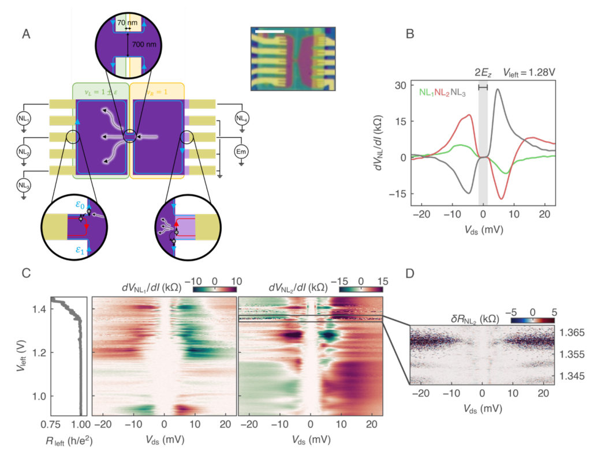
<figcaption class="paper-figure-caption"><b>Fig 1.</b> FIG. 1. Device schematic and magnon detection. a, Schematic of the device. A monolayer graphene flake is encapsulated between hexagonal boron nitride (hBN) layers and placed on a patterned graphite back gate split into two electrically isolated sections separated by a ∼70 nm gap. Independent gate voltages control the carrier density on the left and right sides of the graphene. A silicon gate beneath the right side locally increases the filling factor near the ohmic contacts to enhance magnon emission. The graphene is etched above the split gate to define a 700 nm-wide constriction. Magnons are injected at the emitter contact, where the local filling factor is tuned to ν &gt; 1, and are...</figcaption>
</figure>
<figure class="paper-figure-card">
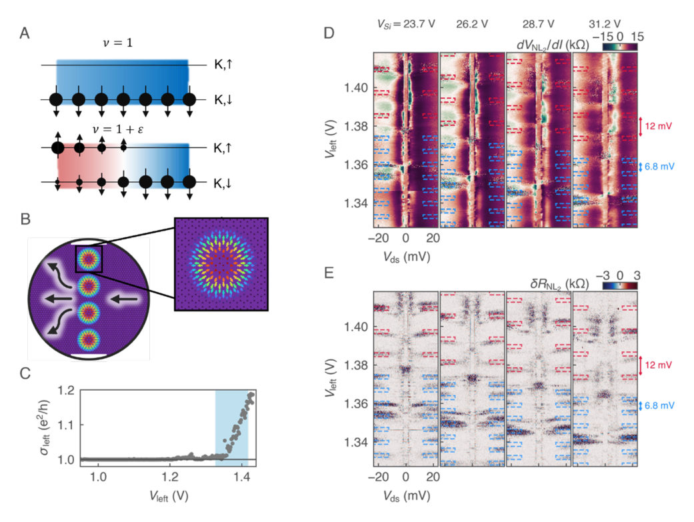
<figcaption class="paper-figure-caption"><b>Fig 2.</b> FIG. 2. Magnon response probing the real-space topology of a skyrmion crystal. a,b, Schematics of the skyrmion crystal junction. Upon doping the lowest Landau level beyond ν = 1, the added charge is accommodated by topological spin textures (skyrmions) (a). Slightly away from ν = 1, these skyrmions crystallize into a topological Wigner crystal confined within the junction (b). Magnons emitted from a single injector (Em2) are scattered by the crystal and detected through the nonlocal response. c, Hall conductance as a function of the left-gate voltage. The light-blue region, slightly away from ν = 1, marks the gate-voltage window where sharp fluctuations in the nonlocal signal are observed....</figcaption>
</figure>
<figure class="paper-figure-card">
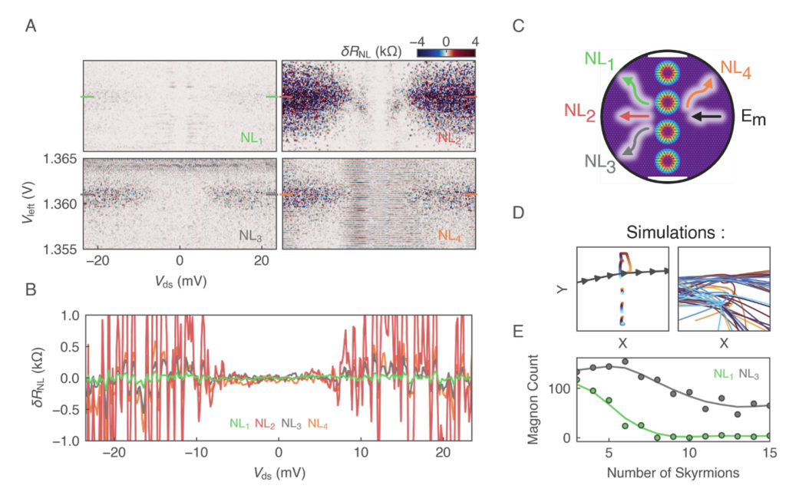
<figcaption class="paper-figure-caption"><b>Fig 3.</b> FIG. 3. Spatially correlated magnon fluctuations induced by a skyrmion crystal. a, Background-subtracted nonlocal resistance measured at detectors NL1, NL2, NL3 and NL4 as a function of drain–source voltage. b, Fluctuations in the nonlocal signal measured at fixed gate voltage as a function of drain–source voltage. The fluctuations are strongly correlated across all detectors, demonstrating a common microscopic origin. c, Schematic of magnon propagation through the junction. Transmitted magnons are detected by nonlocal detectors NL1, NL2 and NL3 on the left side of the junction, whereas reflected magnons are detected by NL4. d,e, Phenomenological model of magnon scattering by a skyrmion...</figcaption>
</figure>
<figure class="paper-figure-card">
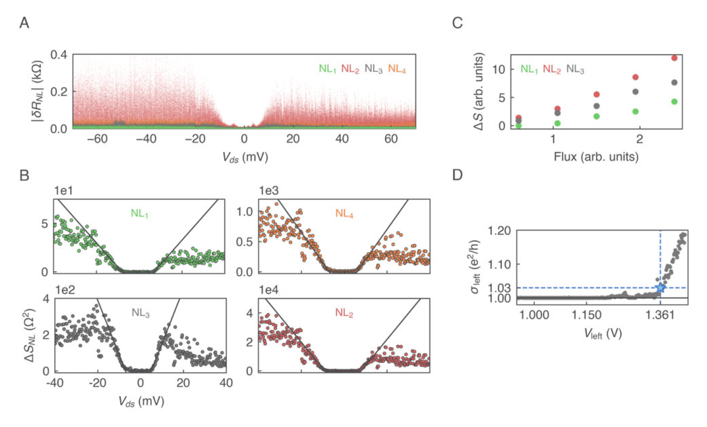
<figcaption class="paper-figure-caption"><b>Fig 4.</b> FIG. 4. Noise signatures of magnon–skyrmion interactions in a low-stiffness crystal. a, Background-subtracted nonlocal magnon signal measured simultaneously at detectors NL1, NL2, NL3 and NL4, averaged over 400 repetitions at each bias point. Sharp fluctuations emerge within narrow gate-voltage windows and are attributed to magnon-induced non- equilibrium dynamics of the skyrmion crystal. As magnons perturb the soft crystal, the resulting fluctuations in the effective scattering potential generate correlated noise across all detectors. b, Variance of the nonlocal signal as a function of drain– source voltage. Above the magnon-emission threshold, the variance increases linearly with bias...</figcaption>
</figure>
</div>

<p><strong>Summary.</strong> Researchers used magnon transport measurements on a graphene junction hosting a skyrmion Wigner crystal to study its internal dynamics. By monitoring sharp, periodic fluctuations in the magnon signal as the gate voltage was tuned, they provided direct evidence that individual skyrmions are added sequentially to the crystal lattice. This establishes magnons as a powerful real-space probe for correlated, topologically ordered phases.</p>
<p><strong>Why it may be interesting.</strong> This work provides an experimental realization of probing collective dynamics in a topologically ordered state (the skyrmion crystal) using quasiparticle excitations (magnons), which is highly relevant to understanding correlated electron behavior beyond simple band theory.</p>
<details>
<summary>Detailed structure</summary>
<p><strong>Main problem.</strong> The primary challenge is probing the internal dynamics and topology of a skyrmion crystal, whose cooperative crystalline order is inherently fragile.</p>
<p><strong>Main result.</strong> The detection of near-periodic fluctuations in magnon count confirms that individual skyrmions are added sequentially to the quasi-1D array, providing real-space insight into the lattice stiffness reduction during this process.</p>
<p><strong>Method.</strong> The study uses non-local magnon transport measurements ($   ext{dV}_{   ext{NL},i}/ ext{dI}$) in a nanoscale graphene junction, acting as a sensitive probe for topological spin textures.</p>
<p><strong>Model / system.</strong> The system is a nanoscale graphene junction hosting a skyrmion Wigner crystal within the Quantum Hall Effect regime. The physics involves interacting electrons forming topologically protected skyrmions stabilized by Coulomb interaction.</p>
<p><strong>Key observables.</strong> Near-periodic windows of sharp fluctuations in magnon count, and the non-local signal onset above the Zeeman energy ($E_Z$).</p>
<p><strong>Important parameters / regimes.</strong> Gate voltage (controlling filling factor $
u$), bias voltage ($V_{ds}$), and the excess charge ($\epsilon$) driving skyrmion formation.</p>
<p><strong>Assumptions / limitations.</strong> The analysis assumes that the non-local response is dominated by bulk magnons propagating across the sample, and that the observed fluctuations correspond to discrete single-skyrmion additions.</p>
<p><strong>Figures summary.</strong> Figures illustrate the setup (graphene junction with gates), show the magnon signal onset at $E_Z$ vs. bias voltage, and display $   ext{dV}_{   ext{NL},i}/ ext{dI}$ dependence on gate voltages to highlight the fluctuation regimes.</p>
<p><strong>Paper structure.</strong> The paper establishes the physical platform (graphene QHE junction), details the measurement technique using non-local magnon transport, presents evidence for skyrmion crystallization via voltage tuning, and interprets the resulting periodic fluctuations as single-skyrmion addition events.</p>
</details>
<details>
<summary>Abstract</summary>
<p>Although individual skyrmions are topologically protected objects, their cooperative crystalline order is fragile, easily disrupted by thermal fluctuations or other external perturbations. Probing the internal dynamics of such a crystal is both compelling and challenging, as its intricate and delicate spin texture must remain stable during measurement. Here, we engineer a nanoscale graphene junction hosting a skyrmion Wigner crystal, embedded between magnon emitters and detectors. The skyrmion crystal geometry leaves a striking imprint on magnon transport: as the gate voltage is varied, near-periodic windows of sharp fluctuations in magnon count are detected across the entire sample. We develop an interpretation that this results from skyrmions being added one by one to a quasi-one-dimensional array. Each burst of the fluctuations thus corresponds to the entry of an additional skyrmion, during which the lattice stiffness reduces. The impinging magnons induce and act as a probe of non-equilibrium collective dynamics of the crystal. These results establish a real-space probe of topological spin textures in quantum Hall-type insulating ground states via magnon transport and open opportunities to explore correlated, topologically ordered phases in moire and multilayer graphene systems.</p>
</details>
<p><sub><a href="#top">↑ back to top</a></sub></p>

<p><a id="paper-2607.15722"></a></p>
<h3 id="drift-induced-nonreciprocal-hyperbolic-polaritons-in-graphenemath751math-moomath752math-heterostructures"><a href="http://arxiv.org/abs/2607.15722v1">Drift-Induced Nonreciprocal Hyperbolic Polaritons in Graphene/$α$-MoO$_3$ Heterostructures</a></h3>
<p><strong>Authors:</strong> Rajveer Fandan, Jorge Pedrós<br>
<strong>Type:</strong> theory · <strong>Category:</strong> other · <strong>PDF:</strong> <a href="https://arxiv.org/pdf/2607.15722v1">https://arxiv.org/pdf/2607.15722v1</a><br>
<strong>Analysis basis:</strong> full PDF text, analyzed in chunks
<strong>Topic relevance:</strong> <code>Keldysh / 2PI / non-Gaussian methods</code> <strong>3/5</strong> · <code>methods for driven-dissipative</code> <strong>3/5</strong> · <code>spintronics-quantum-optics interface</code> <strong>3/5</strong> · <code>driven-dissipative phase transition</code> <strong>2/5</strong> · <code>non-equilibrium dynamics</code> <strong>2/5</strong> · <code>analog quantum simulation</code> <strong>1/5</strong> · <code>correlated / nonlocal dissipation</code> <strong>1/5</strong> · <code>correlated cavity matter</code> <strong>1/5</strong> · <code>interference shaping light</code> <strong>1/5</strong> · <code>non-equilibrium universality</code> <strong>1/5</strong></p>
<div class="figure-strip-hint">↔ Scroll figures horizontally</div>
<div class="paper-figures-scroll">
<figure class="paper-figure-card">
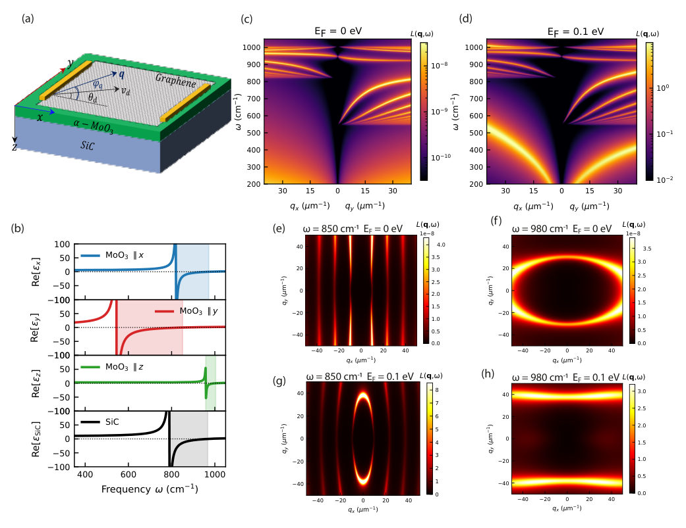
<figcaption class="paper-figure-caption"><b>Fig 1.</b> FIG. 1. Graphene/α-MoO3/SiC heterostructure and tunable polaritonic dispersion. (a) Schematic of the graphene/α-MoO3/SiC device geometry. (b) Real parts of the relative permittivities of α-MoO3 and SiC versus frequency. The shaded regions denote the Reststrahlen bands bounded by the transverse optical (TO) and longitudinal optical (LO) phonon frequencies. (c) Polariton dispersion of the graphene/α-MoO3 (d = 100 nm)/SiC structure for EF = 0 eV, calculated from the loss function with β = 0 [Eq. (6)]. Without graphene plasmons, the spectrum is dominated by the phonon-polariton modes of α-MoO3, with multiple hyperbolic branches along both the x- and y-directions within the Reststrahlen bands....</figcaption>
</figure>
<figure class="paper-figure-card">
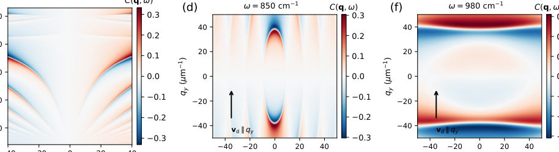
<figcaption class="paper-figure-caption"><b>Fig 2.</b> FIG. 2. Drift-induced nonreciprocal contrast in the polariton dispersion and IFCs. (a,b) Momentum-space contrast induced by a carrier drift with β = 0.05, computed from the loss-function asymmetry [Eq. (6)] along the qx and qy directions, respectively. In (a), the drift is aligned with qx, while in (b) it is aligned with qy. In both cases, the drift breaks the q ↔−q symmetry of the loss function, leading to nonreciprocal polariton dispersion. When the drift is orthogonal to the propagation direction, the dispersion remains nearly unchanged because q · vd = 0. (c,d) Contrast maps of the IFCs at ω = 850 cm−1</figcaption>
</figure>
<figure class="paper-figure-card">
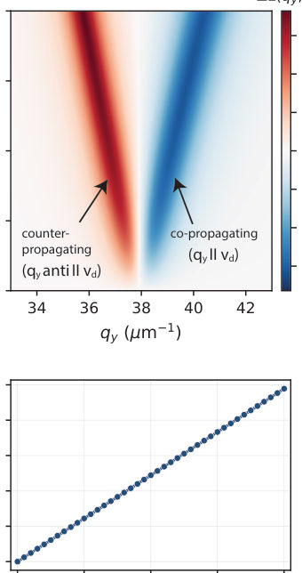
<figcaption class="paper-figure-caption"><b>Fig 3.</b> FIG. 3. Drift-induced nonreciprocity and wavelength asymmetry of graphene–MoO3 hybrid polaritons. a, Density map of the differential loss function ∆L(qy, ω) = L(+qy, ω)−L(−qy, ω) at ω = 850 cm−1 for a graphene/MoO3 (100 nm)/SiC heterostructure with EF = 0.1 eV. The elec- tron drift velocity is along +y and parameterized by β = vd/vF . At β = 0, the system is reciprocal and ∆L = 0. Finite drift breaks q →−q symmetry through a Doppler shift of the graphene response, producing momentum splitting between counter-propagating hybrid plasmon–phonon polaritons. The co-propagating mode (qy ∥β) shifts to larger wavevectors (shorter wavelength), while the counter-propagating mode (qy anti ∥ β) shifts...</figcaption>
</figure>
<figure class="paper-figure-card">
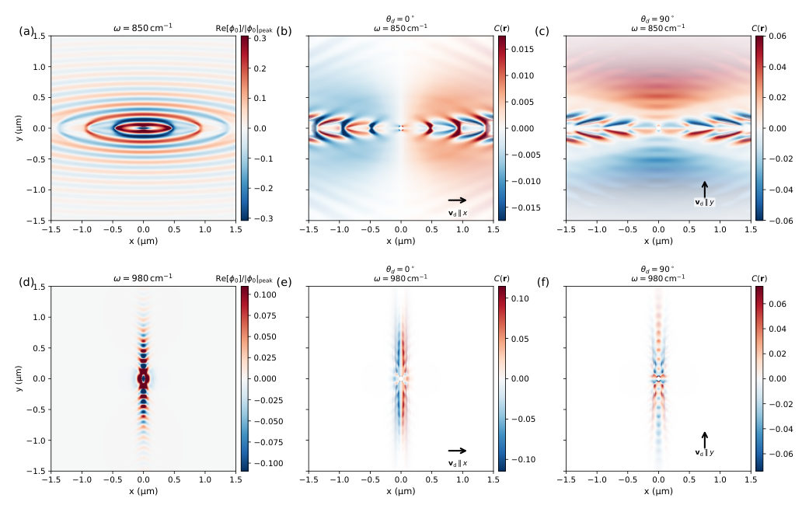
<figcaption class="paper-figure-caption"><b>Fig 4.</b> FIG. 4. Frequency- and direction-resolved real-space signatures of nonreciprocal polariton propagation under carrier drift. (a,d) Real part of the equilibrium potential, Re[ϕ0]/|ϕ0|peak, in the absence of drift (β = 0), at excitation frequencies ω = 850 cm−1 (top row) and ω = 980 cm−1 (bottom row), showing reciprocal polariton fringes launched by a point source. (b,e) Spatial contrast map C(r) [Eq. (9)] for carrier drift along the x-direction (θd = 0◦). (c,f) Same as (b,e), but for drift along the y-direction (θd = 90◦). The contrast isolates the non-reciprocal component of the response by comparing opposite drift configurations ±β, with red (blue) regions indicating enhanced (suppressed)...</figcaption>
</figure>
</div>

<p><strong>Summary.</strong> The paper presents a theoretical study demonstrating how applying a DC current in graphene can induce strong, controllable nonreciprocity in hybrid plasmon-phonon polaritons within a van der Waals heterostructure. By modeling the Doppler shift effect on the material response, the authors predict measurable spectral and spatial asymmetries that enable magnet-free optical isolation for mid-infrared applications.</p>
<p><strong>Why it may be interesting.</strong> This work is highly relevant to quantum optics and open quantum systems because it proposes an electrically tunable platform for directional light control—a key requirement for integrated quantum photonic circuits or advanced sensing applications where optical isolation is paramount.</p>
<details>
<summary>Detailed structure</summary>
<p><strong>Main problem.</strong> The core challenge addressed is achieving optical isolation by breaking symmetry between forward- and backward-propagating light at the nanoscale without relying on bulky magnetic materials.</p>
<p><strong>Main result.</strong> The authors theoretically demonstrate that applying a DC current (drift) in graphene induces tunable, momentum-dependent nonreciprocity in hybrid plasmon-phonon polaritons within a van der Waals heterostructure. This effect can be quantified by a contrast reaching $\sim 0.3$ at modest drift velocities.</p>
<p><strong>Method.</strong> The study employs theoretical modeling using a drift-corrected Random Phase Approximation (RPA) framework to calculate the modified dielectric screening function and subsequent polariton dispersion relations.</p>
<p><strong>Model / system.</strong> The physical system is a Graphene/$\alpha$-MoO$_3$/SiC heterostructure operating in the mid-infrared. The model incorporates the coupling between graphene plasmons and hyperbolic phonon polaritons, whose hybridization and resulting nonreciprocity are controlled by an applied electric field (gate voltage) and carrier drift.</p>
<p><strong>Key observables.</strong> Nonreciprocal contrast $C(\mathbf{q}, \omega)$, momentum-dependent spectral weight imbalance ($\Delta L$), and the real-space near-field intensity modulation $C(r)$.</p>
<p><strong>Important parameters / regimes.</strong> Drift velocity $\mathbf{v}_d$ (set as a fraction of Fermi velocity, e.g., 5% of $v_F$), graphene doping ($E_F$), and the hyperbolic dispersion characteristics of $\alpha$-MoO$_3$.</p>
<p><strong>Assumptions / limitations.</strong> The analysis neglects local-field (exchange–correlation) corrections, which are assumed to be negligible at the relevant wavevectors.</p>
<p><strong>Figures summary.</strong> Figures illustrate the device geometry, phonon/plasmon polariton dispersion curves showing anticrossing gaps, and crucially, momentum-space maps ($\Delta L$) and real-space intensity contrast maps ($C(r)$) demonstrating directional asymmetry locked to the drift direction.</p>
<p><strong>Paper structure.</strong> The paper progresses from establishing the physical platform (heterostructure), detailing the theoretical mechanism (drift-induced Doppler shift modifying RPA calculations), quantifying the effect in momentum space (polariton dispersion and contrast $C$), and finally translating this into a measurable, spatially resolved near-field signature via inverse Fourier transform.</p>
</details>
<details>
<summary>Abstract</summary>
<p>Achieving optical isolation requires breaking symmetry between forward- and backward-propagating light, a long-standing challenge at the nanoscale in the absence of magnetic fields. Here we theoretically demonstrate electrically tunable nonreciprocal phonon-plasmon polaritons in a graphene/$α$-MoO$_3$/SiC heterostructure operating in the mid-infrared. A dc current in graphene induces a wavevector-dependent Doppler shift that breaks reciprocity and generates strong directional asymmetry in hybrid plasmon-phonon propagation. In the reciprocal regime, hybridization between graphene plasmons and hyperbolic phonon polaritons in $α$-MoO$_3$, further shaped by the SiC substrate, enables gate-controlled transitions of isofrequency contours, including canalization along orthogonal crystal axes. At drift velocities of 5% of the Fermi velocity, the system exhibits pronounced momentum-dependent nonreciprocity with contrast reaching $\sim$ 0.3, while directions orthogonal to the drift remain unaffected due to symmetry imposed constraints. Real-space calculations confirm that this momentum-space asymmetry translates into directional near-field intensity modulation. These results establish current-biased van der Waals heterostructures as a platform for electrically tunable, magnet-free nonreciprocal nanophotonics in the mid-infrared.</p>
</details>
<p><sub><a href="#top">↑ back to top</a></sub></p>

<p><a id="paper-2607.15990"></a></p>
<h3 id="phase-controlled-quasi-bound-states-in-the-continuum-and-thermoelectric-enhancement-in-majorana-quantum-dot-nanostructures"><a href="http://arxiv.org/abs/2607.15990v1">Phase-controlled quasi-bound states in the continuum and thermoelectric enhancement in Majorana-quantum-dot nanostructures</a></h3>
<p><strong>Authors:</strong> Alejandro Garrido, David Zambrano, Hishan Farfán-Bachiloglu, Juan Pablo Ramos-Andrade, Vladimir Juričić, Pedro Orellana<br>
<strong>Type:</strong> theory · <strong>Category:</strong> other · <strong>PDF:</strong> <a href="https://arxiv.org/pdf/2607.15990v1">https://arxiv.org/pdf/2607.15990v1</a><br>
<strong>Analysis basis:</strong> full PDF text, analyzed in chunks
<strong>Topic relevance:</strong> <code>Keldysh / 2PI / non-Gaussian methods</code> <strong>3/5</strong> · <code>spintronics-quantum-optics interface</code> <strong>3/5</strong> · <code>Kondo &amp; dissipative impurity</code> <strong>2/5</strong> · <code>methods for driven-dissipative</code> <strong>2/5</strong> · <code>non-equilibrium dynamics</code> <strong>2/5</strong> · <code>analog quantum simulation</code> <strong>1/5</strong> · <code>correlated / nonlocal dissipation</code> <strong>1/5</strong> · <code>driven-dissipative phase transition</code> <strong>1/5</strong> · <code>interference shaping light</code> <strong>1/5</strong></p>
<div class="figure-strip-hint">↔ Scroll figures horizontally</div>
<div class="paper-figures-scroll">
<figure class="paper-figure-card">
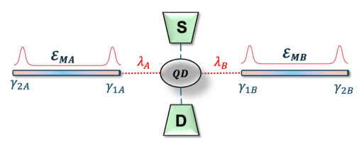
<figcaption class="paper-figure-caption"><b>Fig 1.</b> FIG. 1. Schematic of the crossbar-shaped QD–TSCN device. A central quantum dot (gray) is coupled to two normal leads, source S and drain D (light green), and to two topological- superconductor nanowires A and B (blue and orange). Each wire hosts two MZMs, γ1A(B) and γ2A(B), whose finite-length hybridization energy is εMA(B).</figcaption>
</figure>
<figure class="paper-figure-card">
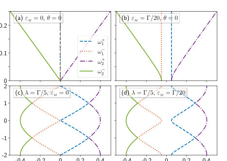
<figcaption class="paper-figure-caption"><b>Fig 2.</b> FIG. 2. Top panels: dependence of the eigenvalues ω± j on the coupling λ = λA(B) at zero phase difference, θ = 0. Bot- tom panels: dependence on the superconducting phase differ- ence for λ = Γ/5. The left column shows the long-wire limit, εMA(B) = 0, and the right column the finite-wire regime, εMA(B) = Γ/20. The doubly degenerate eigenvalues ω± 0 = 0 from Eq. (9) are not shown.</figcaption>
</figure>
<figure class="paper-figure-card">

<figcaption class="paper-figure-caption"><b>Fig 3.</b> Figure 3 examines wire-length asymmetry, εMA = εM + ∆0 and εMB = εM −∆0, with εM = 0.05Γ and ∆0 = 0.005Γ. In the symmetric configuration, the wire spectral functions contain zero-linewidth BIC contribu- tions at ω = ±0.05Γ, whereas these states are absent from the smooth QD LDOS. Unequal hybridization en- ergies give the formerly dark states finite linewidths and convert them into quasi-BICs, producing narrow QD resonances near the same energies. The corresponding electrical and electronic thermal conductances display closely related lateral resonances. The Seebeck coeffi- cient changes sign across each quasi-BIC; for the symmet- ric case it is negligible on the scale shown and vanishes...</figcaption>
</figure>
<figure class="paper-figure-card">
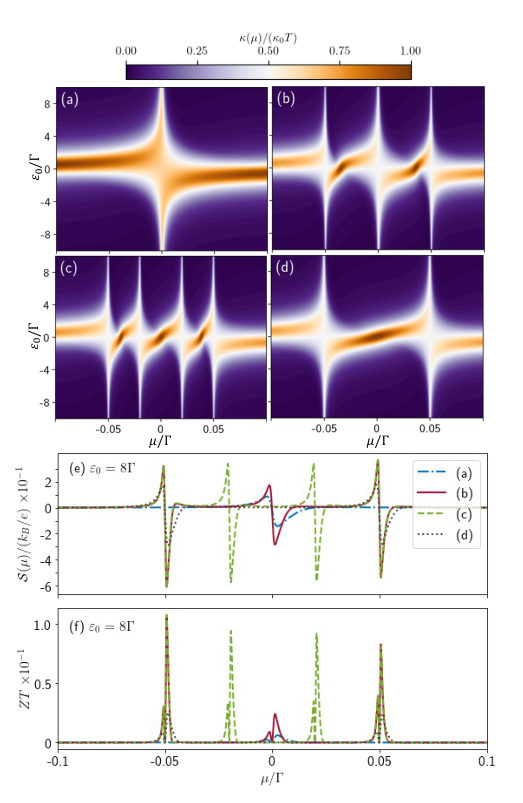
<figcaption class="paper-figure-caption"><b>Fig 4.</b> FIG. 4. Electronic thermal conductance κel/(κ0T) versus QD energy ε0 and chemical potential µ for (a) εMA = εMB = 0, (b) εMA = 0.05Γ and εMB = 0, (c) εMA = 0.05Γ and εMB = 0.02Γ, and (d) εMA = εMB = 0.05Γ. Panels (e) and (f) show S and ZTel, respectively at ε0 = 8Γ. We set θ = 0 and kBT/Γ = 8.6173 × 10−5.</figcaption>
</figure>
<figure class="paper-figure-card">
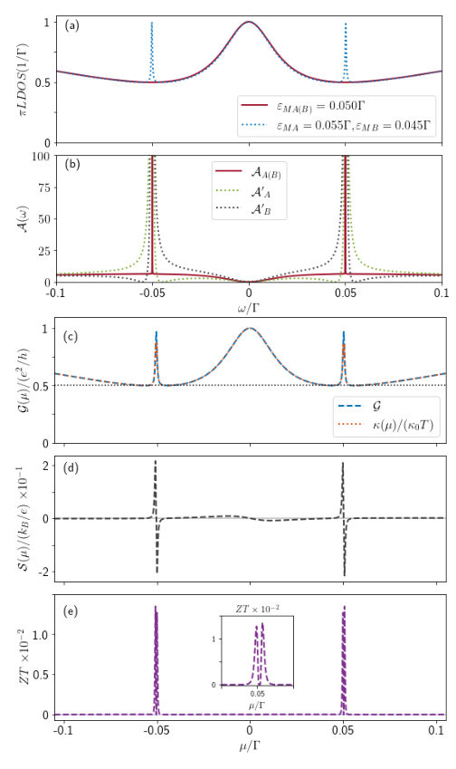
<figcaption class="paper-figure-caption"><b>Fig 5.</b> FIG. 3. (a) QD LDOS and (b) Majorana spectral functions versus ω (c) electrical conductance G and electronic thermal conductance κel; (d) Seebeck coefficient S; and (e) electronic figure of merit ZTel versus µ. Wire-length asymmetry is in- troduced through εMA = 0.055Γ and εMB = 0.045Γ , corre- sponding to ∆0 = 0.005Γ around εM = 0.05Γ. We set ε0 = 0 , θ = 0, and kBT/Γ = 8.6173 × 10−5. The finite height of the exact-BIC peaks in panel (b) depends on the numerical broadening.</figcaption>
</figure>
</div>

<p><strong>Summary.</strong> The paper theoretically investigates how coupling Majorana zero modes (MZMs) to a quantum dot can enhance the thermoelectric response. By controlling the superconducting phase difference ($  heta$), the system exhibits strong enhancement of the figure of merit ($ZT_{el}$) via quadratic transmission zeros. This establishes phase-tunable control over electronic transport in topological nanostructures.</p>
<p><strong>Why it may be interesting.</strong> This work provides a concrete theoretical demonstration of engineering thermoelectric properties in topological hybrid systems by exploiting quantum interference effects related to superconducting phases and MZMs, which is highly relevant for advanced solid-state quantum devices.</p>
<details>
<summary>Detailed structure</summary>
<p><strong>Main problem.</strong> The study investigates how the interplay between Majorana zero modes (MZMs) and bound states in the continuum (BICs) dictates the electronic thermoelectric response of a complex nanostructure.</p>
<p><strong>Main result.</strong> Superconducting phase control is shown to be an efficient mechanism, generating a strong enhancement ($ZT_{el} \simeq 0.75$) by creating quadratic transmission zeros, leading to universal low-temperature transport signatures.</p>
<p><strong>Method.</strong> The analysis employs the Green-function formalism combined with exact linear-response energy integrals and low-temperature Sommerfeld expansions to calculate thermoelectric coefficients.</p>
<p><strong>Model / system.</strong> The system modeled is a crossbar-shaped quantum dot (QD) coupled to two topological-superconductor nanowires hosting MZMs. The Hamiltonian incorporates terms for leads, the QD level, MZM couplings, and hybridization energies.</p>
<p><strong>Key observables.</strong> Thermoelectric figure of merit ($ZT_{el}$), electrical conductance ($G$), Seebeck coefficient ($S$), electronic thermal conductance ($\kappa_{	ext{el}}$), and the Lorenz ratio ($L/L_0$).</p>
<p><strong>Important parameters / regimes.</strong> Superconducting phase difference ($ heta$), QD detuning ($\epsilon_0$), and nanowire length asymmetry (affecting MZM coupling strengths).</p>
<p><strong>Assumptions / limitations.</strong> The calculations are limited to electronic thermal conductance ($\kappa_{el}$), excluding phonon heat transport. The wide-band approximation is used for normal lead self-energies.</p>
<p><strong>Figures summary.</strong> Figures schematically illustrate the device structure and show how spectral functions (LDOS) and transport quantities ($ZT_{el}$) vary as a function of phase difference, QD energy, and chemical potential, highlighting resonance features.</p>
<p><strong>Paper structure.</strong> The paper develops the theory using Green's functions in the Nambu basis to calculate linear-response currents for charge and heat. It then analyzes how symmetry breaking (via phase control or detuning) converts BICs into transport-active quasi-BICs, leading to quantitative comparisons of $ZT_{el}$ enhancements.</p>
</details>
<details>
<summary>Abstract</summary>
<p>We investigate how the interplay between Majorana zero modes (MZMs) and bound states in the continuum (BICs) governs the electronic thermoelectric response of a crossbar-shaped quantum dot (QD) coupled to two topological-superconductor nanowires. Using the Green-function formalism, exact linear-response energy integrals, and their low-temperature Sommerfeld expansion, we analyze the spectral and thermoelectric properties of the system. We show that symmetry breaking converts BICs into quasi-BICs, allowing them to contribute to electrical and thermal transport and thereby generate a finite thermoelectric response. While unequal nanowire lengths, reflected in different intra-Majorana coupling strengths, produce only a modest enhancement of $ZT_{el}$, detuning the QD level increases $ZT_{el}$ by approximately one order of magnitude. Superconducting-phase control produces a much stronger enhancement, reaching $ZT_{el} \simeq 0.75$ through a quadratic transmission zero and a pronounced violation of the Wiedemann-Franz law. The low-temperature values $ZT^{max}_{el} \simeq 0.755$ and $\mathscr{L} /\mathscr{L}_{0} = 21/5$ are universal consequences of this quadratic antiresonance. Our results establish phase-tunable thermoelectric signatures of the Majorana-coupled interference structure and identify superconducting-phase control as an efficient means of engineering the electronic response of topological hybrid nanostructures.</p>
</details>
<p><sub><a href="#top">↑ back to top</a></sub></p>

<p><a id="paper-2607.16055"></a></p>
<h3 id="coherent-driving-of-displacive-higgs-fluctuations-in-superconductors"><a href="http://arxiv.org/abs/2607.16055v1">Coherent driving of displacive Higgs fluctuations in superconductors</a></h3>
<p><strong>Authors:</strong> Jacopo Fiore, Irene Zanotti, Kota Katsumi, N. P. Armitage, Claudio Castellani, Goetz Seibold, Lara Benfatto<br>
<strong>Type:</strong> both · <strong>Category:</strong> strongly correlated electrons · <strong>PDF:</strong> <a href="https://arxiv.org/pdf/2607.16055v1">https://arxiv.org/pdf/2607.16055v1</a><br>
<strong>Analysis basis:</strong> full PDF text, analyzed in chunks
<strong>Topic relevance:</strong> <code>driven-dissipative phase transition</code> <strong>3/5</strong> · <code>methods for driven-dissipative</code> <strong>3/5</strong> · <code>non-equilibrium dynamics</code> <strong>3/5</strong> · <code>non-equilibrium universality</code> <strong>2/5</strong> · <code>Keldysh / 2PI / non-Gaussian methods</code> <strong>1/5</strong> · <code>analog quantum simulation</code> <strong>1/5</strong> · <code>correlated / nonlocal dissipation</code> <strong>1/5</strong> · <code>correlated cavity matter</code> <strong>1/5</strong></p>
<div class="figure-strip-hint">↔ Scroll figures horizontally</div>
<div class="paper-figures-scroll">
<figure class="paper-figure-card">
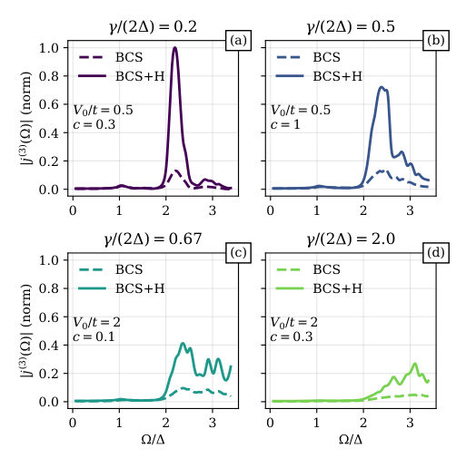
<figcaption class="paper-figure-caption"><b>Fig 1.</b> FIG. 1. Nonlinear first-harmonic current response j(3)(Ω) as a function of Ω/∆, where Ωdenotes the frequency of the ap- plied field and ∆is the spectral order parameter. The differ- ent values γ/(2∆) are obtained for different combinations of the impurity concentration (c) and impurity strength (V0/t), indicated in each panel, with the same electron filling n = 0.5. We show the nonlinear current with (solid line) and without (dashed line) Higgs fluctuations. All panels share a common scale set by the maximum value in panel (a).</figcaption>
</figure>
<figure class="paper-figure-card">
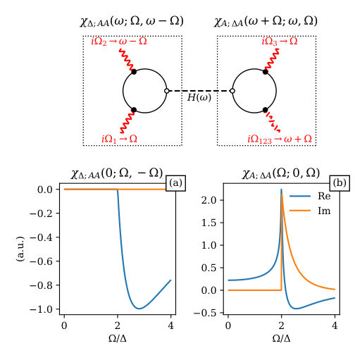
<figcaption class="paper-figure-caption"><b>Fig 2.</b> FIG. 2. Top: Feynman’s diagram of the amplitude-mode con- tribution to the nonlinear FH. Here photons are represented as wavy lines, fermions by solid lines, and the amplitude mode by a dashed line. Filled/empty circles represent σ0/σ2 vertices in the Nambu notation (see [44]). Bottom: sketch of the real and imaginary part of the left (a) and right (b) bubbles in the top panel computed at T = 0 within the quasiparticle analytical approximation [44] as a function of Ωfor ω = 0.</figcaption>
</figure>
<figure class="paper-figure-card">
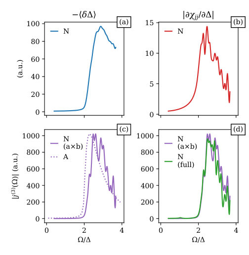
<figcaption class="paper-figure-caption"><b>Fig 3.</b> FIG. 3. (a) Static δ∆(0) order-parameter fluctuations and (b) derivative of the linear susceptibility |∂χjj/∂∆| as a func- tion of the pump frequency Ω, as obtained by numerical (N) solution of the model (3). Here we show results for impu- rity strength V0/t = 0.5 and concentration c = 1, with elec- tronic filling n = 0.875. (c) Comparisons between the prod- uct δ∆(0)(∂χ/∂∆) in Eq. (9) obtained from the numerical results of panels (a) and (b) (solid line) and the analytical result (dotted line, denoted by A) based on the Zimmermann approximation [44], setting γ/(2∆) ∼0.7 and η/(2∆) ∼0.02 consistent with numerical simulations. Panel (d): comparison between the amplitude of the full...</figcaption>
</figure>
<figure class="paper-figure-card">
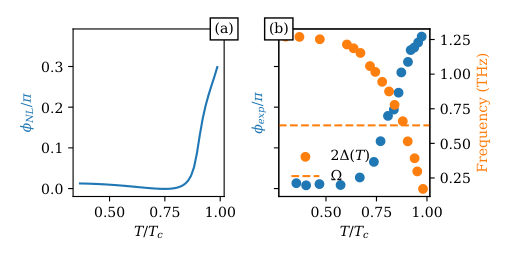
<figcaption class="paper-figure-caption"><b>Fig 4.</b> FIG. 4. (a): Theoretical phase shift on the nonlinear FH simulated in the Zimmermann approximation (see SI) using γ/(2∆) = 1.5 and η/(2∆) = 0.05. (b): Experimental phase shift (blue) of the nonlinear first harmonic measured on a NbN sample with Tc ≈14.9 K and 2∆(T = 0) ≈1.2 THz through a narrowband THz pulse with central frequency Ω≈0.63 THz (orange dashed line). The orange dots represent twice the SC gap 2∆(T) against temperature measured via THz linear spectroscopy in Ref. [18].</figcaption>
</figure>
<figure class="paper-figure-card">
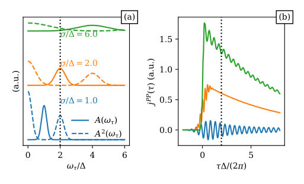
<figcaption class="paper-figure-caption"><b>Fig 5.</b> FIG. 5. (a): The spectral envelope A(ωτ) of the pump pulse (solid lines), centered at Ω, and the squared pulse A2(ωτ) (dashed lines), centered at the sum-frequency combination 2Ωand at the difference-frequency combination around zero. The Higgs mode can be excited at 2∆either via a sum- frequency process (blue lines), or via a difference-frequency process (green lines), as in the diagram described in Fig. 2. The displacive character depends on the value of Ωwith re- spect to the onset of quasiparticle excitations (black dotted line), making it “impulsive” (blue lines) or “displacive” (or- ange and green lines). (b): Time evolution of the pump-probe signal for varying pump frequency Ω. When...</figcaption>
</figure>
</div>

<p><strong>Summary.</strong> This paper explores how intense THz laser pulses can coherently drive superconducting fluctuations via a mechanism analogous to phonon excitation, termed the displacive Higgs fluctuation. By calculating the nonlinear optical response, the authors demonstrate that this non-resonant coupling significantly enhances measurable signals near the superconducting gap edge in both s-wave and d-wave superconductors.</p>
<p><strong>Why it may be interesting.</strong> The work directly bridges quantum optics/driven systems with many-body physics by using intense light fields to probe collective, non-equilibrium degrees of freedom (Higgs mode), which is highly relevant for understanding correlated materials dynamics.</p>
<details>
<summary>Detailed structure</summary>
<p><strong>Main problem.</strong> Investigating the nonlinear optical response of superconductors driven by intense terahertz (THz) laser pulses, focusing on mechanisms beyond standard resonant linear response.</p>
<p><strong>Main result.</strong> The displacive mechanism, involving a non-resonant static displacement of the superconducting order parameter, is shown to enhance the nonlinear first harmonic signal in both s-wave and d-wave superconductors.</p>
<p><strong>Method.</strong> Combining numerical simulations (using density matrix expansion) with analytical derivations based on diagrammatic methods to calculate nonlinear response functions.</p>
<p><strong>Model / system.</strong> Superconductors (s-wave and d-wave) modeled using a tight-binding Hamiltonian, incorporating disorder potentials. The analysis distinguishes between BCS quasiparticle contributions and bosonic collective modes like the Higgs mode.</p>
<p><strong>Key observables.</strong> Nonlinear first harmonic current ($j_{NL}(\Omega)$), phase shift of the FH vs temperature, and time-domain signal decay rate ($\eta$).</p>
<p><strong>Important parameters / regimes.</strong> THz pulse frequency ($\Omega$), superconducting gap magnitude ($\Delta$), disorder strength ($\gamma$), and temperature ($T$).</p>
<p><strong>Assumptions / limitations.</strong> The analysis often assumes a monochromatic pulse limit for simplicity; the treatment of disorder uses an 'exact configuration approach' in some parts.</p>
<p><strong>Figures summary.</strong> Figures illustrate the enhancement of $j_{NL}(\Omega)$ at $\Omega=2\Delta$ when Higgs fluctuations are included (BCS+Higgs vs BCS), and compare theoretical predictions for static order-parameter fluctuations ($\delta\Delta(0)$) used in the nonlinear current formula.</p>
<p><strong>Paper structure.</strong> The paper progresses from establishing the need to study non-resonant response, developing the theoretical framework using density matrix expansions up to third order, demonstrating the mechanism via $j_{NL}(\Omega)$, and validating predictions through temperature dependence measurements (s-wave) or discussing limitations in unconventional pairing (d-wave).</p>
</details>
<details>
<summary>Abstract</summary>
<p>Intense phase-stable terahertz (THz) laser pulses can drive collective modes coherently via multi-photon excitation pathways in a manner different than the standard resonant mechanism operative in linear response. Here we show that in superconductors the nonlinear optical response can be enhanced when excited quasiparticles activate a (non-resonant) static displacement of the superconducting order parameter, in full analogy with the displacive excitation of coherent phonons in opaque materials. By combining numerical simulations with analytical results we demonstrate that the displacive mechanism to excite the Higgs mode is operative in both $s$-wave and $d$-wave superconductors. We validate this prediction experimentally by the temperature dependence of the phase of the nonlinear first harmonic in superconducting $s$-wave NbN. We also discuss how the order-parameter relaxation at large times, which can be experimentally accessed via pump-probe protocols is connected to energy-dissipative processes. Our results offer a novel perspective on the ability of intense THz fields to measure, and eventually control, the parametric dependence of the optical response on collective degrees of freedom.</p>
</details>
<p><sub><a href="#top">↑ back to top</a></sub></p>

<p><a id="paper-2607.15720"></a></p>
<h3 id="first-order-topological-fflo-transition-and-superconducting-diode-sign-reversal-in-altermagnetic-nanowires"><a href="http://arxiv.org/abs/2607.15720v1">First-Order Topological FFLO Transition and Superconducting Diode Sign Reversal in Altermagnetic Nanowires</a></h3>
<p><strong>Authors:</strong> Bo Fu, Kaizhi Bai, Chang-An Li, Shun-Qing Shen<br>
<strong>Type:</strong> theory · <strong>Category:</strong> other · <strong>PDF:</strong> <a href="https://arxiv.org/pdf/2607.15720v1">https://arxiv.org/pdf/2607.15720v1</a><br>
<strong>Analysis basis:</strong> full PDF text, analyzed in chunks
<strong>Topic relevance:</strong> <code>Keldysh / 2PI / non-Gaussian methods</code> <strong>3/5</strong> · <code>spintronics-quantum-optics interface</code> <strong>3/5</strong> · <code>driven-dissipative phase transition</code> <strong>2/5</strong> · <code>methods for driven-dissipative</code> <strong>2/5</strong> · <code>Kondo &amp; dissipative impurity</code> <strong>1/5</strong> · <code>analog quantum simulation</code> <strong>1/5</strong> · <code>exotic spin models in light-matter</code> <strong>1/5</strong> · <code>non-equilibrium dynamics</code> <strong>1/5</strong> · <code>non-equilibrium universality</code> <strong>1/5</strong></p>
<div class="figure-strip-hint">↔ Scroll figures horizontally</div>
<div class="paper-figures-scroll">
<figure class="paper-figure-card">
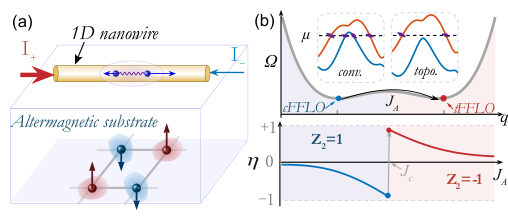
<figcaption class="paper-figure-caption"><b>Fig 1.</b> FIG. 1. (a) Schematic of a 1D spin-orbit-coupled nanowire proxim- itized to a 𝑑-wave altermagnetic substrate. The emergence of FFLO states stabilizes finite-momentum pairing and an intrinsically nonre- ciprocal superconducting state with unequal critical currents 𝐼+ ≠𝐼−. (b) Illustration of the first-order topological FFLO transition driven by altermagnetism. The proximity-induced altermagnetic filed tilts energy bands of the spin-orbit-coupled nanowire and reshape their spin texture, producing band-resolved competing pairing channels (two insets). Upon tuning 𝐽𝐴, the system undergoes a first-order topological phase transition between conventional (Z2 = +1) and topological (Z2 = −1) FFLO...</figcaption>
</figure>
<figure class="paper-figure-card">
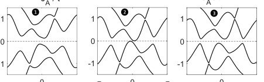
<figcaption class="paper-figure-caption"><b>Fig 2.</b> FIG. 2. (a) Normal-state band structure 𝐸(𝑘): the dashed curve, mirror-symmetric spectrum at 𝐽𝐴= 0 (SOC only); solid curves, tilted, asymmetric bands at finite 𝐽𝐴. Inset: schematic finite-𝑞pair- ing between shifted Fermi points leading to FFLO order. (b) Phase diagram in the (𝑈, 𝐽𝐴) plane at 𝜇= 0.55𝑡. Colors indicate the super- conducting mini-gap (blue: nodal FFLO; red: gapped FFLO). Black and blue dashed lines mark first-order boundaries between cFFLO– nFFLO and cFFLO–tFFLO, respectively; the solid red line marks the (continuous) transition between nFFLO and tFFLO. (c) Self- consistent optimal pairing amplitude Δ (blue circles, left axis) and Cooper-pair momentum 𝑞(red squares, right...</figcaption>
</figure>
<figure class="paper-figure-card">
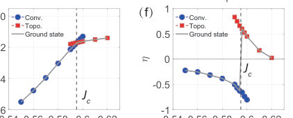
<figcaption class="paper-figure-caption"><b>Fig 3.</b> FIG. 3. (a,b) Representative condensation-energy density Ω(Δ, 𝑞) at 𝑈= 1.5𝑡for two altermagnetic strengths 𝐽𝐴= 0.59𝑡and 𝐽𝐴= 0.60𝑡, just below and above the critical value 𝐽𝑐≈0.595𝑡. Both panels display two minima — cFFLO (Z2 = +1) and tFFLO (Z2 = −1) — separated by a saddle point. White markers denote global and local extrema; the white curve traces the optimal Δ(𝑞) that minimizes Ω at each 𝑞. (c,d) Corresponding cuts showing Ω(𝑞) (blue) and the super- current density 𝐽(𝑞) (red) along the optimal Δ(𝑞) line. The shift of the global minimum between (c) and (d) signals the first-order tran- sition. Open symbols represent the numerical results, while dashed lines denote the corresponding...</figcaption>
</figure>
<figure class="paper-figure-card">
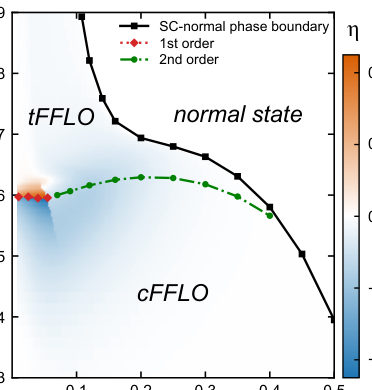
<figcaption class="paper-figure-caption"><b>Fig 4.</b> FIG. 4. Finite-temperature phase diagram in the (𝐽𝐴,𝑇) plane at 𝑈= 1.6𝑡. The black dashed curve marks the superconducting– normal boundary; above it the system is in normal states. Below the boundary (black solid line), the system resides in either a tFFLO or cFFLO phase. The color map shows the superconducting diode efficiency 𝜂: blue (red) indicates negative (positive) 𝜂, white corre- sponds to 𝜂≈0. At low temperatures, the cFFLO–tFFLO boundary (red dashed line) is first order and 𝜂changes sign discontinuously; at higher temperatures this boundary (green dashed line) becomes con- tinuous and 𝜂evolves smoothly across it.</figcaption>
</figure>
<figure class="paper-figure-card">
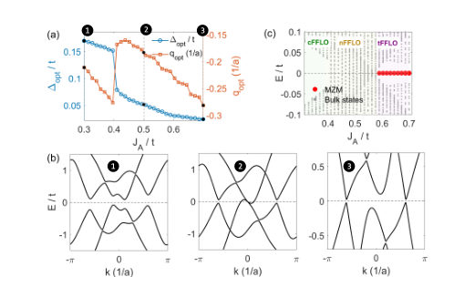
<figcaption class="paper-figure-caption"><b>Fig 5.</b> FIG. 5. Self-consistent evolution across the cFFLO →nFFLO → tFFLO sequence [gray cut in Fig. 2(b)]. (a) Optimal pairing ampli- tude (blue circles, left axis) and Cooper-pair momentum (red squares, right axis) versus 𝐽𝐴/𝑡, showing a first-order jump at the cFFLO– nFFLO boundary and a smooth crossover at the nFFLO–tFFLO boundary. (b) Periodic-boundary BdG spectra at the three 𝐽𝐴values indicated by symbols in (a), illustrating the transition from gapped cFFLO to nodal nFFLO to gapped tFFLO. (c) Corresponding open- boundary spectra versus 𝐽𝐴/𝑡, highlighting the appearance of MZMs only in the tFFLO phase.</figcaption>
</figure>
</div>

<p><strong>Summary.</strong> This theoretical work demonstrates that proximity coupling to altermagnets can induce a first-order transition into a topological FFLO state in nanowires. This abrupt phase change is predicted to manifest as a sharp sign reversal in the superconducting diode effect, offering a novel transport fingerprint for these exotic quantum states.</p>
<p><strong>Why it may be interesting.</strong> The connection between topological quantum phases (characterized by $Z_2$ invariants) and measurable transport properties like diode efficiency provides a concrete, experimentally accessible signature for exotic superconducting states.</p>
<details>
<summary>Detailed structure</summary>
<p><strong>Main problem.</strong> The research investigates realizing a first-order topological Fulde-Ferrell-Larkin-Ovchinnikov (FFLO) transition in superconducting nanowires proximitized to altermagnets.</p>
<p><strong>Main result.</strong> This first-order transition is shown to be marked by discontinuous jumps in the pairing amplitude and momentum, which simultaneously drives a sharp sign reversal in the superconducting diode efficiency ($\eta$).</p>
<p><strong>Method.</strong> The analysis employs Ginzburg-Landau theory applied to the free energy functional derived from mean-field calculations of the Bogoliubov-de Gennes (BdG) Hamiltonian.</p>
<p><strong>Model / system.</strong> The system is a spin-orbit-coupled nanowire coupled to a $d$-wave altermagnetic substrate. The physics is modeled using BdG Hamiltonians and analyzed via minimizing an effective free energy functional $\Omega(\mathbf{q}, \Delta)$.</p>
<p><strong>Key observables.</strong> Topological invariant ($Z_2$), superconducting diode efficiency ($\eta$), optimal pairing amplitude ($\Delta_{opt}$), and pairing momentum ($\mathbf{q}_{opt}$).</p>
<p><strong>Important parameters / regimes.</strong> Altermagnetic coupling strength ($J_A$), chemical potential ($\mu$), and temperature ($T$).</p>
<p><strong>Assumptions / limitations.</strong> The analysis relies on mean-field approximations, the use of a phenomenological Ginzburg-Landau functional, and sometimes quadratic approximations for simplicity.</p>
<p><strong>Figures summary.</strong> Figures illustrate the band structure evolution, the calculation of the topological invariant across phases (cFFLO $   o$ tFFLO), and crucially, show how the superconducting diode efficiency ($\eta$) exhibits a sharp sign reversal at the first-order transition boundary.</p>
<p><strong>Paper structure.</strong> The paper develops the Hamiltonian for the system, derives the necessary free energy functional via mean-field theory, maps out the phase diagram showing three FFLO states (cFFLO, nFFLO, tFFLO), and finally uses GL analysis to link the first-order nature of the transition to the observable sign reversal in $\eta$.</p>
</details>
<details>
<summary>Abstract</summary>
<p>Fulde-Ferrell-Larkin-Ovchinnikov (FFLO) state conventionally emerges via a second-order phase transition driven by finite magnetization. Here we show that a spin-orbit-coupled nanowire proximitized to $d$-wave altermagnets -- with zero net magnetization -- can realize topological FFLO states through a first-order transition, marked by a sharp sign-reversing superconducting diode effect. The altermagnetic field generates band-resolved competing pairing channels, giving rise to a double-valley free energy landscape whose global minimum switches discontinuously. It consequently leads to a first-order topological FFLO transition with simultaneous jumps in the Cooper pairing amplitude and finite center-of-mass momentum. Remarkably, this discontinuous topological reconfiguration substantially enhances the diode efficiency and drives a characteristic sharp sign reversal across the transition. The mechanism of such exotic phenomena is captured by Ginzburg--Landau theory. Our results provide a field-free altermagnetic route to topological FFLO states and identify their direct transport fingerprint.</p>
</details>
<p><sub><a href="#top">↑ back to top</a></sub></p>

<p><a id="paper-2607.15924"></a></p>
<h3 id="amplitude-defect-mediated-transition-to-partial-incoherence-from-experiment-to-theory"><a href="http://arxiv.org/abs/2607.15924v1">Amplitude-Defect Mediated Transition to Partial Incoherence -- From Experiment to Theory</a></h3>
<p><strong>Authors:</strong> Nicolas Thomé, Yukiteru Murakami, Yannick Schöhs, Katharina Krischer<br>
<strong>Type:</strong> both · <strong>Category:</strong> statistical mechanics · <strong>PDF:</strong> <a href="https://arxiv.org/pdf/2607.15924v1">https://arxiv.org/pdf/2607.15924v1</a><br>
<strong>Analysis basis:</strong> full PDF text, analyzed in chunks
<strong>Topic relevance:</strong> <code>driven-dissipative phase transition</code> <strong>3/5</strong> · <code>methods for driven-dissipative</code> <strong>3/5</strong> · <code>non-equilibrium dynamics</code> <strong>2/5</strong> · <code>non-equilibrium universality</code> <strong>2/5</strong> · <code>Frenkel-Kontorova</code> <strong>1/5</strong> · <code>Keldysh / 2PI / non-Gaussian methods</code> <strong>1/5</strong> · <code>analog quantum simulation</code> <strong>1/5</strong> · <code>correlated / nonlocal dissipation</code> <strong>1/5</strong></p>
<div class="figure-strip-hint">↔ Scroll figures horizontally</div>
<div class="paper-figures-scroll">
<figure class="paper-figure-card">
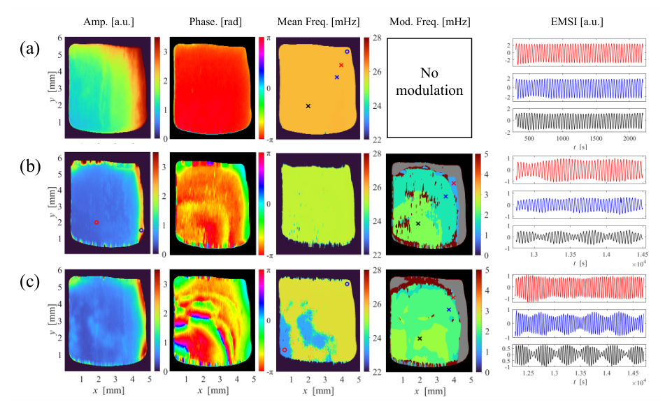
<figcaption class="paper-figure-caption"><b>Fig 1.</b> Figure 1: Experimental Heatmaps: Experimentally measured spatial distribution of time-averaged amplitude (first column), representative snapshots of phase distribution (second column), and time- averaged frequency distribution (third column), amplitude-modulation frequency (fourth column) on an electrode surface, and local EMSI signals at three representative points marked with red, blue, and black crosses (fifth column). Circular markers indicate locations we use for FFT analysis in Figure 4. From (a) to (c), the illumination intensity was decreased in steps: (a) 3.13 mW/cm2, (b) 0.94 mW/cm2, (c) 0.85 mW/cm2. Gray regions in the fourth column indicate locations where no clear amplitude...</figcaption>
</figure>
<figure class="paper-figure-card">

<figcaption class="paper-figure-caption"><b>Fig 2.</b> Figure 2: Transition from coherence to partial incoherence: In the first two panels, (a) and (b), the numerical results are plotted for a system initialized at a bimodal-amplitude solution for N = 5000, C1 = −0.5, C2 = −7, and K = 1.0, and adiabatically decreased by steps of ∆K = 0.001 until K = 0.85. The heterogeneity originates from the intrinsic frequencies ωk ∼N(µ = 0, σ = 0.3) and oscillators are colored according to their ωk. The top panel in (a) displays the mean frequency Ωk of each oscillator k, whereas panel (b) displays the minimum of the radius for each oscillator rmin, k. The vertical dotted line indicates KHB, where the lowest amplitude oscillator passed the localized Hopf...</figcaption>
</figure>
<figure class="paper-figure-card">

<figcaption class="paper-figure-caption"><b>Fig 3.</b> Figure 3: Representative complex plane representations: Four representative complex plane representations of the low-amplitude, dark-blue highlighted oscillator from Fig. 2. We plot the trajectories of the oscillator’s complex amplitude f W in the comoving frame Ωfor three Hopf periods TH. Additionally, we plot the time series of the comoving phase ψ and indicate the winding number q. The K-values are K = 0.970 (a) and (e), K = 0.955 (b) and (f), K = 0.948 (c) and (g) and K = 0.880 in (d) and (h).</figcaption>
</figure>
<figure class="paper-figure-card">

<figcaption class="paper-figure-caption"><b>Fig 4.</b> Figure 4: Fast Fourier Transformation: One-sided fast Fourier transformation for three rep- resentative values of the illumination intensity and the coupling strength, respectively. The two columns on the left represent the experimental results, whereas the two columns on the right give the numerical results. Blue data corresponds to an oscillator with high amplitude, and red to one with low amplitude. In panel (a), the illumination intensity is set to I = 3.13 mW/cm2, and the coupling strength is set to K = 1.0. In (b), I = 0.94 mW/cm2, K = 0.955, and we labelled the mean locked frequency with Ω, the Hopf frequency with ωH and the sideband peak by ωsb. In panel, (c) I = 0.85 mW/cm2 and K =...</figcaption>
</figure>
<figure class="paper-figure-card">

<figcaption class="paper-figure-caption"><b>Fig 5.</b> Figure 5: Macroscopic Transition: In part (a), we plot different order parameters for the adiabatic continuation plotted in Fig. 2. We plot the Kuramoto order parameter for two subgroups: high- amplitude (blue) and low-amplitude oscillators (red). Additionally, we plot the mean-frequency order parameter for the low-amplitude oscillators in green. In panel (b), we plot the distribution of the mean frequencies Ωk against the intrinsic frequencies ωk for K = 0.88.</figcaption>
</figure>
</div>

<p><strong>Summary.</strong> The paper analyzes the transition from synchronized coherence to partial incoherence in coupled nonlinear oscillators, using both electrochemical experiments and theoretical models based on Stuart-Landau equations. The key finding is that this transition is mediated by amplitude defects arising from Hopf bifurcations in low-amplitude components. This mechanism proves that simple phase descriptions are insufficient for capturing the full dynamics of frequency dispersion.</p>
<p><strong>Why it may be interesting.</strong> This work provides a concrete example of how non-amplitude degrees of freedom (i.e., amplitude dynamics) are crucial for describing complex collective behavior in nonlinear oscillators, which has parallels in driven quantum systems or interacting quantum media.</p>
<details>
<summary>Detailed structure</summary>
<p><strong>Main problem.</strong> The study investigates a transition from complete frequency coherence to partial incoherence, demonstrating that this process is mediated by amplitude defects in a way that phase-only models fail to capture.</p>
<p><strong>Main result.</strong> The transition occurs when low-amplitude oscillators undergo successive Hopf bifurcations, causing an amplitude defect that shifts the mean frequency of one group while another remains locked, leading to partial incoherence.</p>
<p><strong>Method.</strong> The research combines experimental measurements (Ellipsomicroscopy on silicon etching) with theoretical analysis using globally coupled heterogeneous Stuart-Landau oscillators and linear stability theory.</p>
<p><strong>Model / system.</strong> The system is modeled by globally coupled heterogeneous Stuart-Landau oscillators, which are used to simulate the nonlinear feedback dynamics observed during electrochemical dissolution of silicon in fluoride electrolytes.</p>
<p><strong>Key observables.</strong> Amplitude ($A$), Phase ($\phi$), Mean Frequency, Amplitude Modulation Frequency (Mod. Freq.), and the Participation Ratio (PR) derived from eigenvalue analysis.</p>
<p><strong>Important parameters / regimes.</strong> Coupling strength ($K$) and illumination intensity ($I$); the transition is characterized by crossing critical coupling strengths ($K_{HB}$) leading to Hopf bifurcations.</p>
<p><strong>Assumptions / limitations.</strong> The theoretical analysis relies on linear stability theory applied in a rotating frame, assuming the existence of a well-defined frequency-locked state $X^*$.</p>
<p><strong>Figures summary.</strong> Figures show experimental heatmaps tracking amplitude and phase across different illumination intensities; numerical/theoretical figures illustrate transitions from coherence to partial incoherence via Hopf bifurcations and winding number changes.</p>
<p><strong>Paper structure.</strong> The paper progresses by first establishing the phenomenon experimentally (varying illumination intensity), then modeling it with coupled oscillators, and finally using advanced stability analysis (Hopf bifurcation, PR calculation) to pinpoint the mechanism of amplitude-defect mediated frequency shifts.</p>
</details>
<details>
<summary>Abstract</summary>
<p>Phase-only models have contributed significantly to the understanding of synchronization; however, they do not account for dynamical scenarios where amplitude dynamics matter. This study identifies an amplitude-mediated transition from complete frequency coherence to partial incoherence, observed both in an electrochemical silicon-etching experiment and within a population of globally coupled heterogeneous Stuart-Landau oscillators. Strong coupling introduces a bimodal-amplitude distribution from which the transition to partial incoherence is triggered by successive secondary Hopf bifurcations in low-amplitude oscillators. When these modulations cause oscillators to experience amplitude defects, the winding number changes, converting the secondary frequency into a new, oscillator-specific mean frequency. This mechanism results in a partially incoherent state, in which one amplitude group maintains frequency locking while another develops a dispersed frequency branch. These findings demonstrate that amplitude defects offer a pathway to incoherence that phase-only models cannot capture.</p>
</details>
<p><sub><a href="#top">↑ back to top</a></sub></p>

<p><a id="paper-2607.15844"></a></p>
<h3 id="electrothermal-control-of-spin-reorientation-transition-in-cofe_3gate_2-heterostructures"><a href="http://arxiv.org/abs/2607.15844v1">Electrothermal control of spin-reorientation transition in Co/Fe_3GaTe_2 heterostructures</a></h3>
<p><strong>Authors:</strong> Po-Wei Chen, Ming-Hsien Hsu, Cheng-Ying Hsiao, Ming-Yang Ho, Masahiro Haze, Yan-Ru Chu, Yu-Cheng Shao, Po-Chun Chang, Chen-Yu Ou, Ruei Chen, Ko-Fan Chen, Chung-Ting Ke, Chao-Hung Du, Yukio Hasegawa, Wen-Chin Lin, .<br>
<strong>Type:</strong> experiment · <strong>Category:</strong> other · <strong>PDF:</strong> <a href="https://arxiv.org/pdf/2607.15844v1">https://arxiv.org/pdf/2607.15844v1</a><br>
<strong>Analysis basis:</strong> full PDF text, analyzed in chunks
<strong>Topic relevance:</strong> <code>spintronics-quantum-optics interface</code> <strong>3/5</strong> · <code>driven-dissipative phase transition</code> <strong>2/5</strong> · <code>analog quantum simulation</code> <strong>1/5</strong> · <code>exotic spin models in light-matter</code> <strong>1/5</strong> · <code>non-equilibrium dynamics</code> <strong>1/5</strong> · <code>non-equilibrium universality</code> <strong>1/5</strong></p>
<div class="figure-strip-hint">↔ Scroll figures horizontally</div>
<div class="paper-figures-scroll">
<figure class="paper-figure-card">

<figcaption class="paper-figure-caption"><b>Fig 1.</b> Figure 1. Atomic-scale deficiency signatures characterized by scanning tunneling microscope (STM) on cleaved Fe3GaTe2 (FGaT). (a) Large-area STM topograph of cleaved FGaT measured at 4 K, showing a flat terrace-like surface without visible step edges in the scanned region. (b) Atomic-resolution STM image showing a hexagonal Te lattice; the fast Fourier transform (FFT) inset confirms sixfold in-plane (IP) symmetry. The dashed circle marks the region enlarged in the central inset, in which dark- and light-blue hexagons mark two representative local motifs used for line-profile comparison. (c) Height profiles along the arrows marked in (a) (top) and (b) (bottom). The large-area profile varies...</figcaption>
</figure>
<figure class="paper-figure-card">

<figcaption class="paper-figure-caption"><b>Fig 2.</b> Fig. 1 shows the surface morphology and atomic- scale defect-related signatures of cleaved FGaT mea- sured by low-temperature scanning tunneling micro- scope (STM). After cleaving the FGaT crystal in the preparation chamber to minimize surface oxida- tion and contamination, a large-area STM topograph was first acquired at 4 K. The surface showed an ex- tended, terrace-like morphology without visible step edges within the scanned region, indicating that the exposed vdWs surface was sufficiently flat for atomic- resolution imaging. This step-free morphology is fur- ther supported by the height profile in Fig. 1(c) (top panel), which varies by less than approximately 0.3 Å over a 100 nm span...</figcaption>
</figure>
<figure class="paper-figure-card">

<figcaption class="paper-figure-caption"><b>Fig 3.</b> Figure 2. In situ STM characterization of Co growth on cleaved FGT: initially isolated Co clusters evolve into quasi- continuous Co coverage with lattice-aligned stripe-like features upon annealing and higher-dose deposition. Apparent Co- covered areas were estimated from levelled STM topographs by absolute-height-threshold mask analysis in Gwyddion [28]. (a) Large-area STM topograph after low-dose Co deposition on FGaT, showing dense nanoscale Co clusters with an apparent Co-covered area of 13.6%. The height profile along the blue arrow (bottom panel) shows isolated clusters up to approximately 5.5 Å in height. (b) STM topograph after annealing at 180 °C for 1 h. The apparent Co-covered...</figcaption>
</figure>
<figure class="paper-figure-card">

<figcaption class="paper-figure-caption"><b>Fig 4.</b> Fig. 2 examines the early-stage morphology and ther- mal redistribution of Co deposited on cleaved FGaT. To avoid oxidation or ambient contamination during metal deposition, Co was evaporated in situ in the preparation chamber of the STM system, and the sam- ple was subsequently transferred back to 4 K for STM imaging. The apparent Co-covered area was estimated from levelled STM topographs using a Gwyddion grain- analysis workflow, in which Co-rich protrusions were marked by an absolute-height threshold, converted into binary masks and normalized by the total scanned area[28]. A small amount of Co was first deposited on FGaT, giving an apparent Co-covered area of 13.6% in Fig. 2(a) (the...</figcaption>
</figure>
<figure class="paper-figure-card">

<figcaption class="paper-figure-caption"><b>Fig 5.</b> Figure 3. Temperature-driven spin-reorientation transition in Co/FGaT. (a) Temperature-dependent out-of-plane (OOP) MOKE hysteresis loops of a Pd(3 nm)/Co(10 nm)/FGaT(198 nm) heterostructure on an Al2O3(0001) substrate. The magnetic field was applied along the crystallographic c-axis. The OOP loop evolves from a square, remanent state at low temperature to a nearly linear hard-axis-like response at high temperature, indicating a progressive reduction of the perpendicular magnetic contribution. (b) Schematic illustration of the temperature-driven spin-reorientation tansition (SRT) process. Below the reorientation temperature TR, the heterostructure is dominated by the perpendicular magnetic...</figcaption>
</figure>
</div>

<p><strong>Summary.</strong> This work demonstrates that applying controlled electrical power can induce a reversible spin-reorientation transition in Co/Fe3GaTe2 heterostructures. By utilizing Joule heating, the magnetic anisotropy of the system can be tuned from out-of-plane to in-plane states at temperatures below the Curie point. This establishes electrothermal control as a viable method for engineering magnetism in next-generation 2D spintronic devices.</p>
<p><strong>Why it may be interesting.</strong> While focused on magnetism, the concept of controlling phase transitions (SRT) using localized, non-equilibrium energy input (Joule heating) is relevant to understanding thermal management in quantum devices or engineered quantum materials.</p>
<details>
<summary>Detailed structure</summary>
<p><strong>Main problem.</strong> The study investigates how electrothermal effects can control the spin-reorientation transition (SRT) in Co/Fe3GaTe2 van der Waals heterostructures.</p>
<p><strong>Main result.</strong> Joule heating causes a reversible switch from an out-of-plane to an in-plane magnetization state at a temperature below the Curie point, demonstrating electrothermal anisotropy competition for controlling vdW magnetism.</p>
<p><strong>Method.</strong> The research employs Magneto-Optical Kerr Effect (MOKE) measurements and power-controlled electrical biasing on the heterostructures.</p>
<p><strong>Model / system.</strong> The physical system is a Co/Fe3GaTe2 van der Waals magnet heterostructure, where magnetic anisotropy competition between the deposited Co overlayer and the underlying FGaT substrate dictates the magnetization state.</p>
<p><strong>Key observables.</strong> Spin-reorientation transition temperature (approx. 311 K), hysteresis loop evolution under applied power (80-100 mW window), and field-assisted domain reversal thresholds ($\sim 15$ mW).</p>
<p><strong>Important parameters / regimes.</strong> The control mechanism is electrothermal, involving Joule heating that modifies the magnetic anisotropy energy balance.</p>
<p><strong>Assumptions / limitations.</strong> The observed electrical response is attributed to an electrothermal origin rather than purely electrostatic effects due to oxide leakage.</p>
<p><strong>Figures summary.</strong> Figures detail STM images showing surface morphology and Co growth evolution on FGaT, alongside MOKE traces illustrating temperature-dependent magnetic switching behavior.</p>
<p><strong>Paper structure.</strong> The paper establishes the context of electrical control in vdW magnets, presents measurements demonstrating the temperature-driven SRT via Joule heating, and confirms this tunability using controlled power application.</p>
</details>
<details>
<summary>Abstract</summary>
<p>Electrical control of magnetic anisotropy in van der Waals (vdWs) magnets is a key step toward reconfigurable two-dimensional spintronics, yet how a conventional metallic ferromagnet competes with a van der Waals magnet across a direct interface has remained largely unexplored. Here we demonstrate reversible thermal and electrothermal control of a spin-reorientation transition in Co/Fe_3GaTe_2 (FGaT) heterostructures. As Joule heating weakens the FGaT anisotropy, the heterostructure switches from an out-of-plane- to an in-plane-dominated state at a reorientation temperature of approximately 311 K, well below the Curie temperature, consistent with an exchange-mediated anisotropy competition between the Co overlayer and FGaT. An electrically driven device shows a closely matching loop evolution within an 80-100 mW power window, reversibly over five measurement cycles, consistent with an electrothermal origin. In a Co-free FGaT device, Kerr microscopy traces the switching to a power-tunable domain nucleation barrier and demonstrates power-thresholded, field-assisted magnetization reversal at a threshold near 15 mW. These results demonstrate electrothermal anisotropy competition as a route to heat-assisted and device-level control of vdWs magnetism.</p>
</details>
<p><sub><a href="#top">↑ back to top</a></sub></p>

<p><a id="paper-2607.15387"></a></p>
<h3 id="phase-field-simulation-of-dendrite-evolution-in-all-solid-state-sodium-batteries-during-cycling"><a href="http://arxiv.org/abs/2607.15387v1">Phase-Field Simulation of Dendrite Evolution in All-Solid-State Sodium Batteries during Cycling</a></h3>
<p><strong>Authors:</strong> Chengyin Wu, Wolfgang Windl, Jung-Hyun Kim, Yanzhou Ji<br>
<strong>Type:</strong> theory · <strong>Category:</strong> numerical methods · <strong>PDF:</strong> <a href="https://arxiv.org/pdf/2607.15387v1">https://arxiv.org/pdf/2607.15387v1</a><br>
<strong>Analysis basis:</strong> full PDF text, analyzed in chunks
<strong>Topic relevance:</strong> <code>Keldysh / 2PI / non-Gaussian methods</code> <strong>3/5</strong> · <code>non-equilibrium dynamics</code> <strong>2/5</strong> · <code>driven-dissipative phase transition</code> <strong>1/5</strong> · <code>methods for driven-dissipative</code> <strong>1/5</strong> · <code>non-equilibrium universality</code> <strong>1/5</strong></p>
<div class="figure-strip-hint">↔ Scroll figures horizontally</div>
<div class="paper-figures-scroll">
<figure class="paper-figure-card">

<figcaption class="paper-figure-caption"><b>Fig 1.</b> Figure 1: Schematic illustration of phase-field model setup and boundary conditions (BCs). The blue, orange and grey colors correspond to the Na anode, NAS grains, and NAS GBs, respectively</figcaption>
</figure>
<figure class="paper-figure-card">

<figcaption class="paper-figure-caption"><b>Fig 2.</b> Figure 2: (a) NAS slab of (100) direction with elements marked Na (blue), S (orange), and Sb (green). (b) DFT results for excess electron charge densities from Bader charges for the NAS (100) surface. (c) Electronic density of states (DOS) of the NAS (100) slab in comparison to the bulk DOS.</figcaption>
</figure>
<figure class="paper-figure-card">

<figcaption class="paper-figure-caption"><b>Fig 3.</b> Figure 3: Snapshots of the Na dendrite(blue)– polycrystalline NAS SE(orange)- GBs(gray) during five consecutive electrochemical cycles under an applied voltage of 0.2 V. Panels (a–e) show the plating process, and panels (f–j) show the corresponding stripping process. The sequence highlights the role of isolated Na remnants formed during stripping, which act as preferential sites for subsequent Na deposition and progressively promote dendrite growth over repeated cycling. Full cycling animation is provided in Supplementary Figure S9.</figcaption>
</figure>
<figure class="paper-figure-card">

<figcaption class="paper-figure-caption"><b>Fig 4.</b> Figure 4: Electric potential (a–d) and Na+ concentration (e–h) distributions immediately before and after dendrite stripping. Early stripping initiates along the Na–grain-boundary sidewalls due to sharp potential gradients (a,b). Following electronic disconnection, a lo- calized negative-potential basin forms around the isolated Na, indicating field redistribution and current bypass (c,d). The corresponding Na+ shielding and curvature contrast between the narrowed neck and the triple-junction Na highlight transport-limited dissolution and kinetic stabilization of isolated Na (e–h).</figcaption>
</figure>
<figure class="paper-figure-card">

<figcaption class="paper-figure-caption"><b>Fig 5.</b> Figure 5: Snapshots of the fifth plating–stripping cycle in a SE microstructure with multiple polycrystalline NAS particles (Na metal (blue), SE (orange), and either void or GBs (gray)) at applied voltages of (a,d) 0.15 V, (b,c) 0.18 V, and (c,f) 0.20 V. Full cycling animation for each applied voltage is listed in Supplementary Figures S10-S12</figcaption>
</figure>
</div>

<p><strong>Summary.</strong> This work uses a sophisticated phase-field model coupled with DFT to simulate dendrite growth in sodium solid-state batteries. It reveals that grain boundary geometry causes asymmetric stripping, trapping residual Na metal which accelerates future dendrite penetration. The findings provide crucial design rules by linking microstructure and anode chemistry to improve battery safety.</p>
<p><strong>Why it may be interesting.</strong> While focused on electrochemistry, the rigorous application of multi-scale phase-field modeling, coupling continuum physics (diffusion/potential) with quantum inputs (DFT), showcases advanced computational techniques relevant for complex non-equilibrium systems.</p>
<details>
<summary>Detailed structure</summary>
<p><strong>Main problem.</strong> Dendrite growth during cycling is a critical, poorly understood challenge limiting the safety and energy density of all-solid-state sodium batteries (SSBs).</p>
<p><strong>Main result.</strong> The study shows that dendrite stripping is intrinsically asymmetric due to grain boundary geometry, leading to residual, kinetically stabilized Na metal that accelerates subsequent dendrite penetration.</p>
<p><strong>Method.</strong> A phase-field model, informed by Density Functional Theory (DFT) calculations, was applied to simulate microstructure evolution during electrodeposition cycles.</p>
<p><strong>Model / system.</strong> The system is a 2D half-cell of Sodium (Na) SSBs using polycrystalline $    ext{Na}_3   ext{SbS}_4$ electrolyte. The model couples Allen-Cahn equations for phase evolution with reaction-diffusion and electric potential equations.</p>
<p><strong>Key observables.</strong> Dendrite penetration depth, isolated Na metal formation size, microstructure evolution ($\xi$, $\phi_g$), and local current/potential distributions.</p>
<p><strong>Important parameters / regimes.</strong> Applied voltage, solid-electrolyte microstructure (GB density), anode chemistry ($  ext{Na}$ vs. $  ext{Na}_3   ext{Sb}$ alloy).</p>
<p><strong>Assumptions / limitations.</strong> The model assumes no side reactions occur during plating and stripping; DFT surface electron densities are used to inform the phase-field parameters.</p>
<p><strong>Figures summary.</strong> Figures illustrate schematic setups, charge distributions from DFT analysis on different crystal planes ((100), (110), (111)), and snapshots showing potential/concentration profiles across various SE microstructures during cycling.</p>
<p><strong>Paper structure.</strong> The paper establishes the physical problem, details the coupled phase-field methodology informed by DFT, presents results demonstrating asymmetric stripping leading to memory effects, and concludes with design principles based on microstructure control.</p>
</details>
<details>
<summary>Abstract</summary>
<p>Dendrite growth during cycling remains a critical challenge for all-solid-state batteries (SSBs), limiting the full realization of their inherent safety and high energy density. In particular, the mechanisms of continuous dendrite penetration during charge-discharge cycling remain poorly understood and are difficult to characterize experimentally. This study applies a phase-field model, informed by density functional theory calculations, to rationalize and visualize the dendrite penetration behaviors during cycling in sodium (Na) SSBs with pure Na or Na-Sb alloy anodes and polycrystalline Na$_3$SbS$_4$ electrolyte. We show that dendrite stripping is intrinsically asymmetric with respect to plating due to grain boundary geometry, leading to the formation of isolated Na metal that persists between cycles. This residual Na metal becomes kinetically stabilized at grain-boundary junctions and is readily reactivated during subsequent plating, thereby accelerating and amplifying dendrite penetration. We further investigate the effects of applied voltage, solid-electrolyte microstructure, and anode chemistry on this phenomenon. These findings establish isolated Na metal as a key contributor for continued dendrite propagation in Na SSBs and provide design principles for stabilizing anode/electrolyte interfaces in Na SSBs.</p>
</details>
<p><sub><a href="#top">↑ back to top</a></sub></p>

<p><a id="paper-2607.15946"></a></p>
<h3 id="disentangling-topological-and-anomalous-hall-contributions-of-skyrmions-using-kerr-microscopy-and-thermal-transport-measurements"><a href="http://arxiv.org/abs/2607.15946v1">Disentangling topological and anomalous Hall contributions of skyrmions using Kerr microscopy and thermal transport measurements</a></h3>
<p><strong>Authors:</strong> H. Heyen, M. Vogel, F. Gossing, J. Walowski, K. Dahmen, J. McCord, M. Münzenberg<br>
<strong>Type:</strong> experiment · <strong>Category:</strong> other · <strong>PDF:</strong> <a href="https://arxiv.org/pdf/2607.15946v1">https://arxiv.org/pdf/2607.15946v1</a><br>
<strong>Analysis basis:</strong> full PDF text, analyzed in chunks
<strong>Topic relevance:</strong> <code>spintronics-quantum-optics interface</code> <strong>3/5</strong> · <code>analog quantum simulation</code> <strong>1/5</strong> · <code>driven-dissipative phase transition</code> <strong>1/5</strong> · <code>exotic spin models in light-matter</code> <strong>1/5</strong> · <code>non-equilibrium dynamics</code> <strong>1/5</strong></p>
<div class="figure-strip-hint">↔ Scroll figures horizontally</div>
<div class="paper-figures-scroll">
<figure class="paper-figure-card">

<figcaption class="paper-figure-caption"><b>Fig 1.</b> Figure 1: Schematic AHE and THE hysteresis loops based on measurement data to reveal the different contributions for varied relative strength. In (a,b) the THE peak height is 249(18) pΩ m, around 8.2 % of the saturation magnetization like measured for Ta/CoFeB/MgO, while for (c,d) the THE is multiplied by 10 and for (e,f) shifted slightly. In Hall effect measurements of (b), the THE signal is hidden at the hysteresis loop edges, where skyrmions get nucleated and becomes clearly visible for higher THE peaks like in (d) or barely visible if it only gets shifted to a different region of the hysteresis loop like in (f).</figcaption>
</figure>
<figure class="paper-figure-card">

<figcaption class="paper-figure-caption"><b>Fig 2.</b> Figure 2: (a) Schematic of a topological Hall effect (THE) measurement setup showing a Néel skyrmion with the winding number 𝑄= −1 as an example centered inside the Hall cross. Elec- trons flowing through skyrmions are deflected by the magnetic field generated by the skyrmion spin structure. This electron deflection (THE) is detected in a Hall-cross configuration. This configuration requires separating the dominating anomalous Hall effect contribution, always present in the measurement signal, e.g. through magnetization measurements with Kerr mi- croscopy (b). The image (b), also found in Figure 6b, was acquired at −0.28(5) mT and its scale bar corresponds to 5 µm. During measurements only...</figcaption>
</figure>
<figure class="paper-figure-card">

<figcaption class="paper-figure-caption"><b>Fig 3.</b> Figure 3: (a) Layer stack for skyrmion creation using sputter coating for Ta and CoFeB with opposing thickness gradients of ±21.2(8) %/cm and e-beam evaporation for MgO and SiO2. The layer thicknesses are measured with quartz crystal microbalances and are calculated for both sample edges along the thickness gradient using reference [35]. The CoFeB thickness gradient generates a landscape of regions with magnetic out-of-plane and in-plane anisotropies. At the transition region between both anisotropy types, skyrmions can be created. These parameters are valid for the MOKE-Hall sample and the Nernst-Hall sample differs by using CoFeB thicknesses of 1.50(8) nm to 1.23(7) nm. (b) Schematic of...</figcaption>
</figure>
<figure class="paper-figure-card">

<figcaption class="paper-figure-caption"><b>Fig 4.</b> Figure 4: Optical microscope images of the investigated devices. (a,b) Cross structures for Hall effect measurements with out-of-plane magnetic fields. (a) has a larger surface area, better suited for MOKE measurements and (b) is smaller allowing for larger temperature gradients when measuring the Nernst effect in (c). Both use constant measurement currents. (c) Micro structure and electrical measurement circuit for measuring the Nernst effect. Its structure is adapted from [14] with minor modifications in the cross width. The sightly greenish shimmering cross in the center consist of the skyrmion material shown in Figure 3a. Above and below it, are temperature sensors located, while...</figcaption>
</figure>
<figure class="paper-figure-card">

<figcaption class="paper-figure-caption"><b>Fig 5.</b> Figure 5: (a) Relative normalized hysteresis loops of the Hall resistivity (black) and magnetization (red) measured at the MOKE-Hall sample. (b) THE, is calculated from the difference of the normalized Hall resistivity and the magnetization presented in (a). (c) The Hall resistivity (black) and Nernst effect (red) measured at the Nernst-Hall sample. (d) Topological quantity 𝑁TQ calculated from (c) by Equation 5. The results in Figure (a),(b) and (c),(d) differ in the exact shape, because of slightly different positions on the CoFeB thickness wedge chosen, but reveal the quantitatively same behavior by independent experimental realization. Both experiments prove for the same related...</figcaption>
</figure>
</div>

<p><strong>Summary.</strong> This work addresses the challenge of isolating the subtle topological Hall effect originating from skyrmions within thin magnetic films where it is masked by a dominant anomalous contribution. By combining magneto-optical imaging with both electrical and thermal transport measurements, the authors successfully quantify the characteristic topological response ($
ho_{THE}$), providing strong evidence for topologically protected spin textures in these nanoscale systems.</p>
<p><strong>Why it may be interesting.</strong> While focused on condensed matter magnetism, the rigorous separation of emergent topological responses from conventional extrinsic effects (like AHE) using multiple complementary physical probes (electrical vs. thermal) is highly relevant to understanding complex many-body dynamics in engineered quantum materials.</p>
<details>
<summary>Detailed structure</summary>
<p><strong>Main problem.</strong> The primary challenge is separating the small topological Hall effect (THE) signal from the much larger, overlapping anomalous Hall effect (AHE) when measuring skyrmion-related transport phenomena.</p>
<p><strong>Main result.</strong> The authors successfully measured a finite topological Hall resistivity of $249(18)\, 	ext{p}\Omega	ext{ m}$ at room temperature and confirmed the existence of topologically protected skyrmions using multiple independent measurements.</p>
<p><strong>Method.</strong> A combination of Magneto-optical Kerr microscopy (MOKE) to image magnetization, electrical transport measurements for THE, and thermal transport measurements for the Topological Nernst Effect (TNE) were employed.</p>
<p><strong>Model / system.</strong> The study investigates single-layer thick films of Ta/CoFeB/MgO that host topologically protected skyrmion spin structures. The analysis models the total measured resistivity ($
ho_{Hall}$) and Nernst effect ($N_{xy}$) as sums of Ordinary, Anomalous, and Topological contributions.</p>
<p><strong>Key observables.</strong> Topological Hall resistivity ($
ho_{THE}$), Topological Nernst coefficient ($N_{TNE}$), surface magnetization images (MOKE), and coercive field decay parameters.</p>
<p><strong>Important parameters / regimes.</strong> Room temperature measurements; film thicknesses in the nanometer range; magnetic anisotropy controlling skyrmion stability.</p>
<p><strong>Assumptions / limitations.</strong> The topological contribution can be isolated by modeling the total signal as a sum of components, and that comparison between THE and TNE provides robust confirmation of topology despite domain wall scattering effects.</p>
<p><strong>Figures summary.</strong> Figures schematically illustrate how AHE and THE hysteresis loops can be separated; one figure shows the setup for measuring THE via electron deflection in a Hall cross configuration.</p>
<p><strong>Paper structure.</strong> The paper proceeds by first establishing the difficulty of separating THE from AHE, then detailing the use of MOKE to confirm skyrmion presence. It rigorously disentangles contributions using both electrical (Hall) and thermal (Nernst) transport measurements, culminating in a quantitative measurement of $
ho_{THE}$ and $N_{TNE}$.</p>
</details>
<details>
<summary>Abstract</summary>
<p>The topological Hall effect is a valuable tool to indicate the presence of topologically protected magnetic structures. In this work, we present topological Hall effect measurements originating from topologically protected skyrmions in Ta/CoFeB/MgO single-layer thick films with a one nanometer thick magnetic layer. The simultaneous occurrence of the small topological Hall effect and the dominating anomalous Hall effect in this material system makes direct detection challenging as compared to bulk or multilayer systems. In electronic transport measurements, both effects' contributions impact electron trajectories in the same way, overlapping in the measurement signal, and require disentanglement. Magneto-optical Kerr microscopy was used to image the surface magnetization, enabling the separation of the topological Hall effect from other Hall effect contributions. These measurements reveal a topological Hall resistivity of $249(18)\,$\si{\pico\ohm\meter} for Ta/CoFeB/MgO layer stacks at room temperature. Magneto-optical Kerr effect (MOKE) measurements also allow tracking skyrmion formation during external magnetic field sweeps to confirm their occurrence when measuring the topological Hall effect. We verify this outcome by comparing the results with thermal and electrical transport measurements from which we calculate the overall topological quantity that gives rise to the topological Nernst and Hall effect, respectively.</p>
</details>
<p><sub><a href="#top">↑ back to top</a></sub></p>

<p><a id="paper-2607.15526"></a></p>
<h3 id="enhanced-third-harmonic-generation-in-diamond-photonic-crystal-slabs-via-doubly-resonant-quasi-bound-states-in-the-continuum"><a href="http://arxiv.org/abs/2607.15526v1">Enhanced Third-Harmonic Generation in Diamond Photonic Crystal Slabs via Doubly Resonant Quasi-Bound States in the Continuum</a></h3>
<p><strong>Authors:</strong> Sangmin Ji, Satoshi Iwamoto, Hideki Gotoh<br>
<strong>Type:</strong> theory · <strong>Category:</strong> other · <strong>PDF:</strong> <a href="https://arxiv.org/pdf/2607.15526v1">https://arxiv.org/pdf/2607.15526v1</a><br>
<strong>Analysis basis:</strong> full PDF text, analyzed in chunks
<strong>Topic relevance:</strong> <code>correlated cavity matter</code> <strong>3/5</strong> · <code>analog quantum simulation</code> <strong>1/5</strong> · <code>driven-dissipative phase transition</code> <strong>1/5</strong> · <code>interference shaping light</code> <strong>1/5</strong> · <code>methods for driven-dissipative</code> <strong>1/5</strong></p>
<div class="figure-strip-hint">↔ Scroll figures horizontally</div>
<div class="paper-figures-scroll">
<figure class="paper-figure-card">

<figcaption class="paper-figure-caption"><b>Fig 1.</b> Fig. 1. (a) 2D TE band structure of the circular-hole hexagonal lattice (n = 2.42, r = 0.27a). The FH mode and two BICs (Mode I and Mode II) are indicated. (b) Continuous deformation of a circular hole into an equilateral triangular hole, with its centroid fixed at the unit-cell center, at constant area A = 𝜋𝑟2. (c) Frequency shift of Mode I and Mode II upon the circular-to-triangular-hole transformation. Solid (dashed) lines indicate the bands for circular (triangular) hole. (d) Spatial distribution (H field perpendicular to the PhC) of the FH mode, Mode I, and mode II in the circular-hole lattice (left), and of FH mode(t) and Mode II(t) in the triangular- hole lattice (right).</figcaption>
</figure>
<figure class="paper-figure-card">

<figcaption class="paper-figure-caption"><b>Fig 2.</b> Fig. 2. Figure of merit Q3|β3|2 (left axis) and the TH-to-FH frequency ratio ω3/ω1 (right axis) as a function of hole size (d/√3)/a for slab thickness t/a = 0.5, 0.55, and 0.6 (Inset: schematic of the unit cell structure with lattice constant a, hole size d, and slab thickness t). The frequency tripling condition ω3/ω1 = 3 is indicated as a green line.</figcaption>
</figure>
<figure class="paper-figure-card">

<figcaption class="paper-figure-caption"><b>Fig 3.</b> Fig. 3. Three-dimensional band structure of the triangular-hole diamond PhC slab (d = 0.451√3a, t = 0.55a). The equivalent filling factor for the circular-hole PhC is r = 0.29a.</figcaption>
</figure>
<figure class="paper-figure-card">

<figcaption class="paper-figure-caption"><b>Fig 4.</b> Fig. 4. Schematic of the PhC heterostructure cavity comprising core, transition and cladding layers. Each layer contains ncore, ntrans, and nclad periods respectively, such that the hexagon side lengths are l1 = ncorea, l2 = (ncore + ntrans)a, and l3 = (ncore + ntrans + nclad)a. The side length of equilateral triangular holes for each layer are dcore, dtrans, and dclad, respectively, where the graded hole size dcore &gt; dtrans &gt; dclad shifts the band maxima of core region into the mode gap of the cladding region.</figcaption>
</figure>
<figure class="paper-figure-card">

<figcaption class="paper-figure-caption"><b>Fig 5.</b> Fig. 6. 3D-FDTD simulated PhC heterostructure cavity (a = 0.584 µm, t = 0.55a, (dcore, dtrans, dclad) = (0.46√3a, 0.44√3a, 0.4√3a), (ncore, ntrans, nclad) = (6, 2, 5)). Top row: Hz Field distributions; bottom row: |E| field distributions, for the FH mode[(a), (b)] and the TH mode [(c), (d)], shown as full cavity view and zoomed core view, respectively. The core region boundary is indicated by a dashed line.</figcaption>
</figure>
</div>

<p><strong>Summary.</strong> The paper presents a design for enhancing Third-Harmonic Generation (THG) using a Photonic Crystal cavity embedded in diamond. By engineering the lattice structure to create doubly resonant quasi-bound states at both the fundamental and third harmonic frequencies, they overcome symmetry limitations that typically suppress nonlinear coupling. The resulting device promises highly efficient, monolithic on-chip frequency conversion applicable across multiple wavelengths.</p>
<p><strong>Why it may be interesting.</strong> This work is highly relevant as it demonstrates advanced photonics engineering—using photonic band structure control (BICs) in a solid-state platform like diamond—to enhance nonlinear optical processes, which is a key area of quantum optics and cavity QED research.</p>
<details>
<summary>Detailed structure</summary>
<p><strong>Main problem.</strong> The core problem is achieving efficient, monolithic on-chip frequency conversion, specifically Third-Harmonic Generation (THG), within a centrosymmetric material like diamond for quantum and nonlinear photonics.</p>
<p><strong>Main result.</strong> The authors designed a photonic crystal heterostructure cavity that achieves a high projected THG efficiency ($\sim 0.034 	ext{ W}^{-2}$ at $Q=200,000$), establishing a robust route for on-chip frequency conversion across various wavelengths.</p>
<p><strong>Method.</strong> The study uses coupled-mode theory and 3D Finite Difference Time Domain (FDTD) simulations to model the THG process in a doubly resonant cavity.</p>
<p><strong>Model / system.</strong> The system is a diamond Photonic Crystal (PhC) slab with a hexagonal lattice containing triangular air holes. It is engineered as a heterostructure cavity designed to support simultaneous resonance for the Fundamental Harmonic ($\omega$) and the Third Harmonic ($3\omega$).</p>
<p><strong>Key observables.</strong> Normalized THG efficiency ($\eta$), Quality Factors ($Q_1, Q_3$), and the nonlinear overlap integral ($eta_3$).</p>
<p><strong>Important parameters / regimes.</strong> The frequency tripling condition ($3\omega \approx \omega_3$) must be met; high quality factors ($Q \sim 200,000$) are crucial for enhancement.</p>
<p><strong>Assumptions / limitations.</strong> The analysis assumes that breaking the in-plane symmetry by using triangular holes is necessary to activate a non-zero nonlinear coupling ($eta_3$).</p>
<p><strong>Figures summary.</strong> Figures illustrate band structures (showing FH and TH modes), optimization plots of the Figure of Merit ($Q_3|eta_3|^2$), and 3D field distributions for both fundamental and third harmonic fields in the optimized cavity.</p>
<p><strong>Paper structure.</strong> The paper progresses by establishing the theoretical framework using coupled-mode theory, detailing the design strategy involving symmetry breaking (circular to triangular holes) to activate nonlinear coupling, optimizing the heterostructure parameters ($n_{core}, n_{trans}, n_{clad}$), and finally presenting high-Q simulation results demonstrating superior THG performance.</p>
</details>
<details>
<summary>Abstract</summary>
<p>We propose and numerically demonstrate doubly resonant third-harmonic generation (THG) in a diamond photonic crystal (PhC) slab, in which the fundamental harmonic (FH) and the third harmonic (TH) modes are simultaneously resonant within the same membrane. A hexagonal-lattice slab with triangular air holes is designed so that a K-point band-edge FH mode and a $Γ$-point quasi-bound-state-in-the-continuum (quasi-BIC) TH mode satisfy the frequency-tripling condition $3ω_1\approxω_3$. Modifying the hole shape from circular to equilateral triangular breaks the in-plane symmetry that otherwise forces the nonlinear coupling to vanish, thereby converting a TH mode with negligible overlap into one with finite while simultaneously reducing the required slab thickness. Guided by a closed-form expression for THG efficiency derived from coupled-mode theory, we design the unit cell and a PhC heterostructure cavity. Three-dimensional simulations of the designed cavity yield a normalized THG efficiency $η=2.7\times10^{-7}~\mathrm{W}^{-2}$ under moderate quality factors, which is projected to reach ~$0.034~\mathrm{W}^{-2}$ at the fabrication-limited quality factor (Q = 200,000). Because the operating wavelength is set by the lattice constant, this design, combined with the ultra-wide transparency window of diamond, can map a single geometry across various fabricable wavelengths, spanning from telecommunication bands to color-center-resonant visible and deep-UV outputs. These results establish a robust route toward efficient, monolithic on-chip frequency conversion in an all-diamond platform for quantum and nonlinear photonics.</p>
</details>
<p><sub><a href="#top">↑ back to top</a></sub></p>

<p><a id="paper-2607.15996"></a></p>
<h3 id="drosophila-of-phonon-mediated-superconductivity-full-eliashberg-theory-of-the-jellium-model"><a href="http://arxiv.org/abs/2607.15996v1">Drosophila of phonon-mediated superconductivity: Full Eliashberg theory of the jellium model</a></h3>
<p><strong>Authors:</strong> Christophe Berthod, Louk Rademaker, Dirk van der Marel<br>
<strong>Type:</strong> theory · <strong>Category:</strong> strongly correlated electrons · <strong>PDF:</strong> <a href="https://arxiv.org/pdf/2607.15996v1">https://arxiv.org/pdf/2607.15996v1</a><br>
<strong>Analysis basis:</strong> full PDF text, analyzed in chunks
<strong>Topic relevance:</strong> <code>Keldysh / 2PI / non-Gaussian methods</code> <strong>3/5</strong> · <code>methods for driven-dissipative</code> <strong>1/5</strong></p>
<div class="figure-strip-hint">↔ Scroll figures horizontally</div>
<div class="paper-figures-scroll">
<figure class="paper-figure-card">

<figcaption class="paper-figure-caption"><b>Fig 1.</b> FIG. 1. Fermi energy 𝜀F, plasma frequency of the charge compensating background 𝜔s (left axis), Fermi</figcaption>
</figure>
<figure class="paper-figure-card">

<figcaption class="paper-figure-caption"><b>Fig 2.</b> FIG. 2. (a) Real and (b) imaginary parts of the self-consistent dynamical self-energy Σ11(𝑘, 𝑖𝜔𝑛)−Σ11(𝑘, 𝑖∞),</figcaption>
</figure>
<figure class="paper-figure-card">

<figcaption class="paper-figure-caption"><b>Fig 3.</b> FIG. 4. Self-consistent anomalous self-energy Σ12(𝑘, 𝑖𝜔𝑛) at 𝑇= 1 mK for the (starting) values of 𝑛e</figcaption>
</figure>
<figure class="paper-figure-card">

<figcaption class="paper-figure-caption"><b>Fig 4.</b> FIG. 5. (a) Superconducting gap at 1 mK on the Fermi surface for the lowest Matsubara frequency</figcaption>
</figure>
<figure class="paper-figure-card">

<figcaption class="paper-figure-caption"><b>Fig 5.</b> FIG. 6. Self-consistent gap function on the Fermi surface versus temperature (dots) and fitted temperature</figcaption>
</figure>
</div>

<p><strong>Summary.</strong> This work provides a rigorous, numerically intensive solution to the Migdal-Eliashberg equations for phonon-mediated superconductivity within the jellium model. The authors demonstrate that accounting for full momentum and frequency dependence drastically lowers predicted critical temperatures ($T_c < 1$ K). This result cautions against overestimating high-$T_c$ superconductivity using simplified models.</p>
<p><strong>Why it may be interesting.</strong> While focused on BCS-like pairing in a simple metal, the rigorous application of full Eliashberg theory and the discussion of necessary approximations (RPA, momentum/frequency dependence) are highly relevant methodologies for analyzing strongly coupled quantum systems in AMO physics or condensed matter theory.</p>
<details>
<summary>Detailed structure</summary>
<p><strong>Main problem.</strong> The primary goal is to accurately determine the critical temperature ($T_c$) for phonon-mediated superconductivity in the jellium model, specifically challenging previous overestimations of high-$T_c$. The authors investigate whether the simple jellium model can support room-temperature superconductivity.</p>
<p><strong>Main result.</strong> The full Eliashberg theory calculation yields very low critical temperatures ($T_c < 1$ K) for the jellium model, contradicting earlier optimistic claims. This suggests that more complex physics beyond the basic jellium framework is required for high-$T_c$.</p>
<p><strong>Method.</strong> The study employs a full numerical solution of the Migdal-Eliashberg equations in their momentum and frequency-dependent form, requiring advanced techniques to handle singularities near the Fermi surface.</p>
<p><strong>Model / system.</strong> The system modeled is the jellium background for phonon-mediated superconductivity. The theory relies on solving the self-consistent Eliashberg equations using approximations like Random Phase Approximation (RPA) for screening.</p>
<p><strong>Key observables.</strong> Critical temperature ($T_c$), anomalous self-energy ($\Sigma_{12}$), quasiparticle residue ($Z$), and the gap function ($\Delta$).</p>
<p><strong>Important parameters / regimes.</strong> Electron density ($n_e$), Chemical Potential ($\mu$), Fermi wavevector ($k_F$), and phonon frequencies ($\omega_{	ext{ph}}$).</p>
<p><strong>Assumptions / limitations.</strong> The jellium model is used, which employs the Thomas-Fermi approximation for screening and neglects effects like Friedel oscillations. The full ME equations are solved numerically, requiring approximations for momentum and frequency integration.</p>
<p><strong>Figures summary.</strong> Figures illustrate characteristic energy scales ($\epsilon_F$, $\omega_s$, $k_F$) vs density; they also show the real part of the normal self-energy ($\Sigma_{11}$) and the temperature dependence of the anomalous self-energy, confirming renormalization effects.</p>
<p><strong>Paper structure.</strong> The paper progresses by first establishing the theoretical framework (ME equations), then tackling numerical challenges related to momentum/frequency integration, and finally presenting convergence studies leading to a low $T_c$ estimate for the jellium model.</p>
</details>
<details>
<summary>Abstract</summary>
<p>We present a full numerical solution of the Migdal--Eliashberg equations for the jellium model of phonon-mediated superconductivity. We find very low critical temperatures below 1~K, in contrast to earlier claims that the jellium model for hydrogen solids might reach room-temperature superconductivity. Our results suggest that full momentum and frequency dependence of the gap function and normal self-energy should be taken into account for accurate $T_c$ estimates.</p>
</details>
<p><sub><a href="#top">↑ back to top</a></sub></p>

<p><a id="paper-2607.15622"></a></p>
<h3 id="near-field-dressing-of-thermal-emission"><a href="http://arxiv.org/abs/2607.15622v1">Near-field Dressing of Thermal Emission</a></h3>
<p><strong>Authors:</strong> Victor Guillemot, Raphael Mol, Riccardo Messina, Valentina Krachmalnicoff, Philippe Ben-Abdallah, Wilfrid Poirier, Yannick De Wilde<br>
<strong>Type:</strong> both · <strong>Category:</strong> other · <strong>PDF:</strong> <a href="https://arxiv.org/pdf/2607.15622v1">https://arxiv.org/pdf/2607.15622v1</a><br>
<strong>Analysis basis:</strong> full PDF text, analyzed in chunks
<strong>Topic relevance:</strong> <code>quantum optics experiment</code> <strong>2/5</strong> · <code>Keldysh / 2PI / non-Gaussian methods</code> <strong>1/5</strong> · <code>analog quantum simulation</code> <strong>1/5</strong> · <code>correlated / nonlocal dissipation</code> <strong>1/5</strong> · <code>driven-dissipative phase transition</code> <strong>1/5</strong> · <code>methods for driven-dissipative</code> <strong>1/5</strong> · <code>non-equilibrium dynamics</code> <strong>1/5</strong></p>
<div class="figure-strip-hint">↔ Scroll figures horizontally</div>
<div class="paper-figures-scroll">
<figure class="paper-figure-card">

<figcaption class="paper-figure-caption"><b>Fig 1.</b> Fig. 1 Dual-probe platform for resolving individual radiative balances in a coupled thermal dimer. (a) Schematic of the experimental configuration. Two 42.3 µm-diameter borosili- cate microspheres are attached to the apices of opposing scanning thermal microscopy probes and separated by a controllable gap d. Each cantilever integrates a platinum resistive thermometer pro- viding both local temperature readout (T1, T2) and Joule heating through an injected electrical power PJoule. The experiment is performed under high vacuum (P = 10−6 mbar) to suppress heat transfer by conduction and convection through air. Each sphere exchanges thermal radiation both with the neighboring sphere and with...</figcaption>
</figure>
<figure class="paper-figure-card">

<figcaption class="paper-figure-caption"><b>Fig 2.</b> Fig. 2 Direct observation of asymmetric radiative balances in near-field-coupled thermal emitters (a) Variation of radiative heat flux of the sphere 1, ∆Qrad,1(d), measured for four different temperatures T1 while sphere 2 is maintained at T2 = 83 ◦C and the environment at T0 = 22 ◦C. Experimental data are compared with full-wave fluctuational-electrodynamics calculations performed with SCUFF-EM (solid lines). In the far field, the radiative flux of sphere 1 depends weakly on T1, whereas at short separations it becomes strongly temperature dependent due to the onset of near- field coupling between the two spheres. (b) Variation of the radiative heat flux of the sphere 2, ∆Qrad,2(d). In...</figcaption>
</figure>
<figure class="paper-figure-card">

<figcaption class="paper-figure-caption"><b>Fig 3.</b> Fig. 3 Renormalization of far-field emission by near-field coupling. (a) Distance-dependent dressed emissivity of the coupled two-sphere system, defined from the total radiative exchange with the environment. Experimental measurements (for all values of T1) are represented with dots, cal- culations performed with SCUFF-EM are represented as solid lines and the semi-analytical model described in the Online Methods is represented as dashed lines. As the spheres approach each other in the far-field, the dressed emissivity decreases, as predicted by the semi-analytical model. At short distance, deviations from the geometrical model indicate that near-field coupling modifies the far-field...</figcaption>
</figure>
<figure class="paper-figure-card">

<figcaption class="paper-figure-caption"><b>Fig 4.</b> Fig. 4 Description of the experimental setup. (a) Schematic of the vacuum chamber. The position of each probe is controlled by a manual micrometric stage combined with a fine piezoelectric stage. (b) Frequency dependence of the bridge response. Two thermal cutoff frequencies are observed. The highest frequency is related to the diffusivity of the cantilever alone, while the lowest comes from the adding of the microsphere. The system is operated above the highest cutoff frequency to avoid temperature oscillations during the measurements. (c)Calibration curves of the two probes used in our experiment. The probes are placed in an oven while monitoring their electrical resistance. The...</figcaption>
</figure>
<figure class="paper-figure-card">

<figcaption class="paper-figure-caption"><b>Fig 5.</b> Fig. 5 Dielectric constant and emissivity of the glass microsphere (a) Real and imaginary part of the dielectric function of silica as a function of the frequency. (b) Emissivity of a R = 20 µm silica spheres calculated in the framework of fluctuational electrodynamics according to [34].</figcaption>
</figure>
</div>

<p><strong>Summary.</strong> This paper experimentally and theoretically proves that near-field electromagnetic coupling between objects alters their far-field thermal emission. By measuring the radiative balance of two microspheres across varying separations, the authors quantify a 'dressed emissivity.' This finding establishes a measurable thermal analogue to the Purcell effect, showing that the surrounding photonic environment dictates the emitted radiation spectrum.</p>
<p><strong>Why it may be interesting.</strong> This work provides a direct, measurable thermal analogue of the Purcell effect, demonstrating how coupling to an electromagnetic environment modifies fundamental radiation properties (emissivity) in nanoscale systems, which is highly relevant to quantum optics and open system dynamics.</p>
<details>
<summary>Detailed structure</summary>
<p><strong>Main problem.</strong> The study investigates whether near-field electromagnetic coupling between two bodies modifies their far-field thermal radiation, moving beyond simply quantifying the enhanced energy exchange between neighbors.</p>
<p><strong>Main result.</strong> The authors experimentally and theoretically demonstrate that near-field interactions renormalize the far-field thermal emission by inducing a distance-dependent 'dressed emissivity,' establishing a thermal analogue of the Purcell effect.</p>
<p><strong>Method.</strong> The work combines high-precision differential calorimetry experiments with advanced theoretical modeling using fluctuational electrodynamics (e.g., SCUFF-EM solvers).</p>
<p><strong>Model / system.</strong> The system consists of two borosilicate microspheres placed in a vacuum chamber, allowing for controlled separation distances spanning from the far field ($\gg \lambda$) down to the near field ($d \sim 100$ nm).</p>
<p><strong>Key observables.</strong> Asymmetric heat fluxes, non-monotonic temperature responses, and the extracted distance-dependent dressed emissivity ($\Delta\epsilon_{	ext{dress}}(d)$).</p>
<p><strong>Important parameters / regimes.</strong> Separation distance ($d$), which is varied from $120 \mu	ext{m}$ down to hundreds of nanometers; the thermal wavelength ($\lambda_{Wien}$).</p>
<p><strong>Assumptions / limitations.</strong> The analysis relies on decomposing total radiative power into sphere-bath, sphere-sphere, and external bath components. Semi-analytical models are limited when $d$ approaches $\lambda_{Wien}$.</p>
<p><strong>Figures summary.</strong> Figures illustrate the setup (dual-probe platform), temperature variations showing asymmetry vs. separation, and comparisons between full-wave simulations (SCUFF-EM) and semi-analytical predictions for heat flux and dressed emissivity.</p>
<p><strong>Paper structure.</strong> The paper establishes the physical problem by noting the gap in understanding near-field effects on emitted radiation. It details the experimental platform and measurement techniques to quantify radiative balance, develops theoretical frameworks using fluctuational electrodynamics, and presents results showing spectral renormalization via the dressed emissivity.</p>
</details>
<details>
<summary>Abstract</summary>
<p>Radiative heat transfer at subwavelength distances is generally understood as enhanced energy exchange mediated by photon tunnelling between neighboring bodies. While near-field interactions can dramatically increase mutual heat transfer, whether they also modify the thermal radiation emitted by the bodies themselves remains an open question. Here we experimentally show that near-field electromagnetic coupling reshapes far-field thermal emission through a distance-dependent dressed emissivity. Using a dual-probe calorimetric platform, we independently monitor the radiative balance of two borosilicate microspheres over separations ranging from 120 micrometers to a few hundred nanometers, spanning the transition from the far field to the near field. Nanowatt-resolved differential radiometry reveals asymmetric heat fluxes and a non-monotonic response of the hotter sphere, demonstrating that thermal radiation is governed not only by emitter-bath interactions but also by coupling to the surrounding photonic environment. By analyzing the total power exchanged between the coupled system and the external thermal bath, we directly extract a dressed emissivity and show that near-field interactions renormalize the far-field thermal emission of the pair through a redistribution of the electromagnetic modes available to thermal fluctuations. These observations provide direct experimental evidence that thermal emitters are dressed by their electromagnetic environment, establishing a thermal analogue of the Purcell effect.</p>
</details>
<p><sub><a href="#top">↑ back to top</a></sub></p>

<p><a id="paper-2607.15777"></a></p>
<h3 id="reversible-and-irreversible-dynamical-topological-transitions-of-magnetic-hopfions"><a href="http://arxiv.org/abs/2607.15777v1">Reversible and irreversible dynamical topological transitions of magnetic Hopfions</a></h3>
<p><strong>Authors:</strong> S. Y. Lu, H. M. Dong, D. X. Yu, K. Chang<br>
<strong>Type:</strong> theory · <strong>Category:</strong> other · <strong>PDF:</strong> <a href="https://arxiv.org/pdf/2607.15777v1">https://arxiv.org/pdf/2607.15777v1</a><br>
<strong>Analysis basis:</strong> full PDF text, analyzed in chunks
<strong>Topic relevance:</strong> <code>driven-dissipative phase transition</code> <strong>2/5</strong> · <code>analog quantum simulation</code> <strong>1/5</strong> · <code>exotic spin models in light-matter</code> <strong>1/5</strong> · <code>non-equilibrium dynamics</code> <strong>1/5</strong> · <code>non-equilibrium universality</code> <strong>1/5</strong> · <code>spintronics-quantum-optics interface</code> <strong>1/5</strong></p>
<div class="figure-strip-hint">↔ Scroll figures horizontally</div>
<div class="paper-figures-scroll">
<figure class="paper-figure-card">

<figcaption class="paper-figure-caption"><b>Fig 1.</b> FIG. 2. (a) Fourier spectrum of the Hopfion response to a weak sinc magnetic-field pulse, revealing intrinsic resonance modes. (b) Time evolution of the Hopf invariant QH under weak sinusoidal AM fields at selected resonance frequencies with B0 = 50 mT. Resonant driving produces an irreversible Hopfion-to-toron transition. (c) Line profiles of mz along the central line of the Hopfion and toron states. The toron state is distinguished by central magnetization reversal. (d) Total energy evolution during the irreversible transition.</figcaption>
</figure>
<figure class="paper-figure-card">

<figcaption class="paper-figure-caption"><b>Fig 2.</b> FIG. 1. (a) Schematic of the cylindrical multilayer nanos- tructure used to confine a magnetic Hopfion, together with the two dynamical regimes studied in this work. In regime I, weak resonant driving induces an irreversible Hopfion-to- toron transition. In regime II, strong AM driving produces reversible switching between a topologically trivial FM state and a Hopfion state. (b) Schematic of the transition mecha- nism I and the energy landscape for the irreversible Hopfion- to-toron reconfiguration, as well as the evolution of energy. Resonant nonlinear excitation drives the system over an ef- fective topological barrier, accompanied by local magnetiza- tion overturning and the formation...</figcaption>
</figure>
<figure class="paper-figure-card">

<figcaption class="paper-figure-caption"><b>Fig 3.</b> FIG. 3. (a) Temporal evolution of the magnetization tex- ture during breathing-mediated reversible switching under a strong AM field with B0 = 11 T and f = 2 GHz. (b) Evo- lution of representative preimage links, showing the periodic emergence and disappearance of Hopfion topology. (c) Time evolution of the Hopf invariant QH synchronized with the ap- plied AM field. (d) Evolution of the characteristic radius R of the central topological structure, demonstrating breathing- type contraction and expansion.</figcaption>
</figure>
<figure class="paper-figure-card">

<figcaption class="paper-figure-caption"><b>Fig 4.</b> FIG. 4. (a) Temporal evolution of the magnetization texture during nonresonant rotational topological switching under a strong AM field with B0 = 10 T and f = 40 GHz. The frequency is above the intrinsic Hopfion-mode spectrum ob- tained in the weak-field regime, indicating that the rotational pathway is driven by strong Zeeman torque and field locking rather than by linear eigenmode resonance. (b) Evolution of representative preimage links during the first half-cycle. (c) Hopf invariant QH as a function of time, showing reversible switching synchronized with the applied field. (d) Detailed time evolution of QH, showing an initial transient regime, a metastable locking regime, and a final...</figcaption>
</figure>
</div>

<p><strong>Summary.</strong> This paper explores the complex dynamics of magnetic Hopfions under alternating magnetic fields, revealing that the field regime dictates the outcome. Weak fields cause irreversible topological decay, whereas strong fields enable coherent, reversible switching between different topological states. The frequency of the applied field acts as a switch, selecting distinct physical pathways for this controlled topological manipulation.</p>
<p><strong>Why it may be interesting.</strong> This work demonstrates controlled topological switching using external fields, providing a platform analogous to controlling quantum states or phase transitions in engineered magnetic systems, which has implications for spintronics and nonlinear dynamics modeling.</p>
<details>
<summary>Detailed structure</summary>
<p><strong>Main problem.</strong> The study investigates how magnetic Hopfions, which are 3D topological solitons, undergo dynamical transitions when subjected to alternating magnetic (AM) fields.</p>
<p><strong>Main result.</strong> The system exhibits two distinct regimes: an irreversible transition from Hopfion to toron in weak fields, and a reversible, frequency-dependent switching between ferromagnetic and Hopfion states in strong fields.</p>
<p><strong>Method.</strong> The research employs 3D micromagnetic simulations combined with analytical mode analysis to track the evolution of topological invariants under time-varying magnetic fields.</p>
<p><strong>Model / system.</strong> The system models magnetization dynamics within a confined nanostructure containing chiral magnetic layers, governed by the Landau–Lifshitz–Gilbert equation incorporating exchange, DMI, anisotropy, and dipolar interactions.</p>
<p><strong>Key observables.</strong> Hopf invariant (QH), magnetization texture evolution, total energy, and intrinsic mode amplitudes.</p>
<p><strong>Important parameters / regimes.</strong> Field amplitude ($B_0$) and driving frequency ($f$), which act as independent control knobs determining the switching pathway.</p>
<p><strong>Assumptions / limitations.</strong> The dynamics are analyzed by solving micromagnetic equations; the distinction between weak-field (resonant) and strong-field (nonresonant/field-locked) responses is key.</p>
<p><strong>Figures summary.</strong> Figures illustrate schematic comparisons of irreversible vs. reversible transitions, time evolution of QH under resonant driving showing breakdown, and detailed temporal traces of magnetization and $Q_H$ for both 2 GHz (breathing) and 40 GHz (rotational) switching pathways.</p>
<p><strong>Paper structure.</strong> The paper systematically contrasts the outcomes of weak-field excitation (leading to instability/irreversibility) against strong-field excitation, demonstrating how frequency selects between low-frequency collective motion paths and high-frequency field-locked limit cycles for reversible control.</p>
</details>
<details>
<summary>Abstract</summary>
<p>Magnetic Hopfions are three-dimensional (3D) topological solitons characterized by a nonzero Hopf invariant and offer a promising platform for 3D spintronics. While their static stabilization has been widely studied, their nonlinear dynamics under alternating magnetic (AM) fields remain largely unexplored. We show, using 3D micromagnetic simulations and analytical mode analysis, that an AM field drives two qualitatively distinct dynamical regimes of a confined magnetic Hopfion. In the weak-field regime, resonant excitation of intrinsic Hopfion modes induces a nonlinear instability and an irreversible topological reconfiguration from a Hopfion to a toron. In contrast, in the strong-field regime, the system undergoes reversible field-locked topological switching at GHz frequencies, with the magnetization periodically alternating between a topologically trivial ferromagnetic configuration and a Hopfion state. The switching pathway is selected by the driving frequency: a 2 GHz field drives a breathing pathway associated with the low-frequency collective response, whereas a 40 GHz field produces a nonresonant rotational pathway governed by strong Zeeman-torque-driven precession and field locking. These results identify field amplitude and frequency as independent control knobs and reveal that reversible Hopfion switching can arise either from nonlinear continuation of low-frequency collective motion or from nonresonant high-frequency field locking.</p>
</details>
<p><sub><a href="#top">↑ back to top</a></sub></p>

<p><a id="paper-2607.15757"></a></p>
<h3 id="contactless-terahertz-mapping-of-wafer-scale-superconducting-nbtin-thin-films"><a href="http://arxiv.org/abs/2607.15757v1">Contactless terahertz mapping of wafer-scale superconducting NbTiN thin films</a></h3>
<p><strong>Authors:</strong> Yayi Lin, Marc Neis, Marcello Pio Guardascione, Janine Lorenz, Thomas J. Smart, F. Stefan Tautz, Felix Lüpke, Frederik Bolle, Martin Dressel, Rami Barends, Pavel A. Bushev, Marc Scheffler<br>
<strong>Type:</strong> experiment · <strong>Category:</strong> other · <strong>PDF:</strong> <a href="https://arxiv.org/pdf/2607.15757v1">https://arxiv.org/pdf/2607.15757v1</a><br>
<strong>Analysis basis:</strong> full PDF text, analyzed in chunks
<strong>Topic relevance:</strong> <code>quantum optics experiment</code> <strong>2/5</strong> · <code>QC/QI experiment</code> <strong>1/5</strong> · <code>quantum measurements</code> <strong>1/5</strong></p>
<div class="figure-strip-hint">↔ Scroll figures horizontally</div>
<div class="paper-figures-scroll">
<figure class="paper-figure-card">

<figcaption class="paper-figure-caption"><b>Fig 1.</b> Fig. 1. Overview of room-temperature mapping in THz-FDS. (a) THz-FDS setup. ①Backward wave oscillator (BWO), a continuous-wave THz source in the frequency range 8–13 cm-1, ②Teflon THz lenses to collimate output THz beam, ③Attenuator to avoid detector saturation, ④chopper to modulate THz beam, ⑤lenses to focus THz beam on the sample, ⑥sample holder with 6-mm diameter aperture, ⑦the measured wafer with NbTiN thin film, and ⑧Golay cell as THz detector. (b) Rs maps of two 4-inch wafers, wC (left) and wD (right). (c) Rs deviation for positions along y-axis with respect to the center D3 of wafer wD. The black data are from the on-wafer measurements shown in (b), while the red data are measured...</figcaption>
</figure>
<figure class="paper-figure-card">

<figcaption class="paper-figure-caption"><b>Fig 2.</b> Fig. 2. Percentage Rs deviation wafer-scale maps of (a) one 6-inch wafer wF and (b–h) seven 4-inch wafers wH–wN with different NbTiN film thicknesses between 60 nm to 5 nm. The deviations of Rs are indicated with respect to the center of each wafer.</figcaption>
</figure>
<figure class="paper-figure-card">

<figcaption class="paper-figure-caption"><b>Fig 3.</b> Fig. 3. (a–j) The δRs histograms of the wafers shown in Table I. The solid lines are Gaussian fits and the fit width represents the standard deviation (Std.) of δRs. In (c), the red histogram and black line indicate the δRs across the full 6-inch wafer wF, while the cyan histogram and blue line concern the smaller, center 4-inch area of the same wafer wF. (k, l) is the Std. obtained from the Gaussian fit. (k) is the standard deviation (Std.) as a function of film thickness, relating to (d–j). (l) is Std. for different wafers with 50-nm thin films, where the blue dot is related to the cyan and blue data in (c) and the red dots are for Std. across the full wafers.</figcaption>
</figure>
<figure class="paper-figure-card">

<figcaption class="paper-figure-caption"><b>Fig 4.</b> Fig. 4. Overview of THz-TDS measurements. (a) THz-TDS setup with home-made cryostat. (b) Frequency-dependent complex optical conductivity of sample D3 for temperature below and above the superconducting transition (T c ≈13.8 K). Data points are from measurements, and lines are the fits by Mattis-Bardeen (MB) theory.</figcaption>
</figure>
<figure class="paper-figure-card">

<figcaption class="paper-figure-caption"><b>Fig 5.</b> Fig. 5. Comparison of superconducting properties between samples D1 (black), D3 (red) and D5 (blue). (a) DC transport measurements of Rs, DC near the critical temperature T c. The inset shows T c and the respective transition width as a function of position on wafer wD. (b, c) The temperature dependence of superconducting energy gap 2∆and sheet kinetic inductance Lk respectively. Dots represent experimental data and the solid lines are fitting curves. The insets show the spatial distributions of 2∆0 and Lk0 on wafer wD. (d–f) Position-dependent deviations of T c, 2∆0 and Lk0, respectively, with respect to sample D3.</figcaption>
</figure>
</div>

<p><strong>Summary.</strong> This paper demonstrates a powerful, contactless technique using Terahertz spectroscopy to map the homogeneity of superconducting $ ext{NbTiN}$ thin films across entire wafers. By correlating spatial variations in normal-state resistance ($R_s$) with changes in the superconducting kinetic inductance ($L_k$), the authors provide a crucial pre-fabrication quality control method for quantum computing components.</p>
<p><strong>Why it may be interesting.</strong> While focused on materials characterization rather than fundamental AMO physics, the use of non-contact THz spectroscopy to probe collective quantum phenomena (superconducting condensate) at wafer scale is highly relevant for developing superconducting quantum hardware.</p>
<details>
<summary>Detailed structure</summary>
<p><strong>Main problem.</strong> The primary goal is to ensure the homogeneity of superconducting thin films across entire wafers for reliable use in large-scale quantum devices.</p>
<p><strong>Main result.</strong> THz mapping proves that local variations in normal-state resistance ($R_s$) correlate with deviations in the zero-temperature kinetic inductance ($L_{k0}$), enabling pre-lithography quality control.</p>
<p><strong>Method.</strong> The study employs contactless Terahertz (THz) spectroscopy, combining room-temperature frequency-domain mapping for $R_s$ and cryogenic time-domain measurements to probe superconducting gaps and kinetic inductance.</p>
<p><strong>Model / system.</strong> The system involves Niobium Titanium Nitride ($ ext{NbTiN}$) thin films on silicon wafers. Analysis relies on the Drude model for normal state resistance and Mattis-Bardeen theory for extracting the superconducting energy gap ($2\Delta$).</p>
<p><strong>Key observables.</strong> Sheet resistance ($R_s$), critical temperature ($T_c$), superconducting energy gap ($2\Delta$), and sheet kinetic inductance ($L_k$).</p>
<p><strong>Important parameters / regimes.</strong> Wafer sizes (4-inch, 6-inch), THz frequency range ($\sim 0.1 - 3 	ext{ THz}$), and temperature regimes (room to cryogenic).</p>
<p><strong>Assumptions / limitations.</strong> The extraction of $R_s$ from raw spectra assumes the scattering rate is much larger than in the THz regime; fitting superconducting properties uses established BCS/Mattis-Bardeen models.</p>
<p><strong>Figures summary.</strong> Figures show room-temperature maps of sheet resistance deviations ($\delta R_s$) and cryogenic measurements comparing spatial distributions of $2\Delta$ and $L_{k0}$ across different wafer locations.</p>
<p><strong>Paper structure.</strong> The work progresses from establishing the need for homogeneity in quantum technology, detailing the THz mapping methodology (room vs. cryo), presenting results showing correlations between normal-state and superconducting property variations, and concluding on the technique's feasibility as a pre-screening tool.</p>
</details>
<details>
<summary>Abstract</summary>
<p>For large-scale superconducting quantum technology, e.g. quantum computing, the homogeneity of wafer-scale superconducting thin films is vital for consistent performance of the fabricated devices. Terahertz (THz) spectroscopy as a contactless and non-destructive measurement technique is a powerful tool to characterize the superconducting films. In this work, a set of niobium titanium nitride (NbTiN) thin films on 4-inch and 6-inch silicon wafers, grown via plasma-enhanced magnetron sputtering, are investigated via THz spectroscopy: full wafers are mapped at room temperatures and exemplary segments are characterized at cryogenic temperatures. The deviations in observed sheet resistance depend on the used deposition device and the film thickness. While the deviations in superconducting sheet kinetic inductance match those of the normal-state sheet resistance, the critical temperature and energy gap exhibit little variation. This THz mapping technique demonstrates the feasibility of evaluating wafer-scale superconducting thin films before lithography, facilitating preparation of the thin films for reproducible device fabrication.</p>
</details>
<p><sub><a href="#top">↑ back to top</a></sub></p>
<hr>
<p>
<a href="index.html">← Index</a>
 · <a href="papers_04.html">← Previous</a> · <a href="papers_06.html">Next →</a>
</p>
<hr>

</body>
</html>
